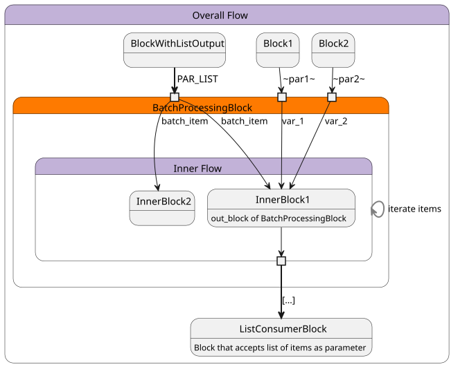

flow_kit.library.control_flow
Block flow_kit.library.control_flow.BatchProcessing(flow, out_block)
BatchProcessing is a FlowBlock that applies a defined flow to each item of an input list/batch. The BatchProcessing
block returns a list containing the out_block results for the flow runs of all items of the input list.
In order to use the BatchProcessing block a flow and an out_block need to be specified. The specification for both
elements is described in more detail below:
- flow: Flow is the sub-flow which is run one time for every item of the parameter "list" of the
BatchProcessing block. The inner blocks of this sub-flow need to be defined the same way as overall
flows of the flow-kit are defined.
- out_block: The out_block defines the block from which the result values are taken for the output of the
BatchProcessing block. It must be a block contained in the sub-flow given by the flow defined
in the constructor of BatchProcessing.
For detailed information how to use this block refer to examples/batch_processing_usage.py.

Parameter:
- BatchProcessing.PAR__LIST <List of items with item type> List of items to flow.
- the '~key~' that is defined in inner flow with Assign(...).to_flow_parameter('~key~') <Type that is needed by blocks in inner flow that use this parameter.> Additionally to PAR_LIST one parameter for each flow parameter is present here.
Return:
- <List of items with type of result type of out_block> List of results of all out_block iteration runs. If an out_block is not executed in an iteration run, e.g. due to a ConditionalSkip block before the out_block, no result is added to the result list for this iteration run. This means these out_block iteration runs are filtered from the result list of the BatchProcessing block. If the out_block of any iteration gets SKIPPED or ABORTED the overall state of the BatchProcessing block will also be SKIPPED or ABORTED.
Block flow_kit.library.control_flow.ConditionalSkip()
Block will go to SKIPPED if given condition is true to stop flow execution.Parameter:
- ConditionalSkip.PAR__SKIP <bool> If true this block will be set to SKIPPED.
Return:
- <None>
flow_kit.library.ecu_test
Block flow_kit.library.ecu_test.CreateGcdFile()
Create a global constants file.
This block expects a running instance of ecu.test and does not start or stop ecu.test automatically.
Parameter:
- CreateGcdFile.PAR__CONSTANTS <dict> Global constants to save in gcd file. Keys are constant names and values are expressions representing the values.
- CreateGcdFile.PAR__GCD_PATH <pathlib.PurePath> Target path for the gcd file.
- CreateGcdFile.PAR__ALLOW_OVERWRITE <bool> (optional, default = False) If false and file already exists this block will fail.
Return:
- <pathlib.PurePath> Full gcd file path.
Block flow_kit.library.ecu_test.ObjectApiUserCode(user_function)
Run custom code with ecu.test ObjectApi.
Given function must have an argument api which will be the ObjectApiClient.
All other arguments and the return value must have type hints.
This block expects a running instance of ecu.test and does not start or stop ecu.test automatically.
flow_kit.library.file_operation
Block flow_kit.library.file_operation.CheckDirectoryExists()
Checks that a file or directory exists under the specified path.Parameter:
- CheckDirectoryExists.PAR__PATH <pathlib.PurePath> Full file path to the directory to check
- CheckDirectoryExists.PAR__RAISE_IF_EXISTS <bool> (optional, default = False) If set an exception is raised if the given directory does exist
- CheckDirectoryExists.PAR__RAISE_IF_NOT_EXISTS <bool> (optional, default = False) If set an exception is raised if the given directory does not exist
Return:
- <bool> boolean indicating that a directory exists under the given path
Block flow_kit.library.file_operation.CheckFileExists()
Checks that a file exists under the specified path.Parameter:
- CheckFileExists.PAR__PATH <pathlib.PurePath> Full file path to the file to check
- CheckFileExists.PAR__RAISE_IF_EXISTS <bool> (optional, default = False) If set an exception is raised if the given file does exist
- CheckFileExists.PAR__RAISE_IF_NOT_EXISTS <bool> (optional, default = False) If set an exception is raised if the given file does not exist
Return:
- <bool> boolean indicating that a file exists under the given path
Block flow_kit.library.file_operation.CopyFile()
Copies a given file to a wanted target path.Parameter:
- CopyFile.PAR__SOURCE_FILE_PATH <pathlib.PurePath> Full file path to the file to copy
- CopyFile.PAR__TARGET_PATH <pathlib.PurePath> Full file path where the file should be copied to
- CopyFile.PAR__ALLOW_OVERWRITE <bool> (optional, default = False) Flag to allow overwriting an existing file at the target_path
Return:
- <pathlib.PurePath> full file path to the copied file at the target path
Block flow_kit.library.file_operation.CreateDirectory()
Creates directory under the given path.Parameter:
- CreateDirectory.PAR__TARGET_PATH <pathlib.PurePath> full file path where the new directory should be created
Return:
- <pathlib.PurePath> full file path to the created directory
Block flow_kit.library.file_operation.CreateZipArchive()
Creates a Zip archive of all files inside a given folder.Parameter:
- CreateZipArchive.PAR__CONTENT_FOLDER_PATH <pathlib.PurePath> path to the folder to create the Zip archive from
- CreateZipArchive.PAR__TARGET_PATH <pathlib.PurePath> full file path where the new Zip archive should be created
- CreateZipArchive.PAR__ALLOW_OVERWRITE <bool> (optional, default = False) Flag to allow overwriting an existing file at the target_path
Return:
- <pathlib.PurePath> full file path to the created Zip archive
Block flow_kit.library.file_operation.DownloadFile()
Downloads files from a given URL and saves them under a specified path.Parameter:
- DownloadFile.PAR__DOWNLOAD_URL <str> Url to the file to download
- DownloadFile.PAR__TARGET_PATH <pathlib.PurePath> Full file or directory path to store the downloaded file at
- DownloadFile.PAR__ALLOW_OVERWRITE <bool> (optional, default = False) Flag to allow overwriting an existing file at the target_path
- DownloadFile.PAR__DOWNLOAD_TIMEOUT <int> (optional, default = 60) Timeout for the download in seconds
Return:
- <pathlib.PurePath> Path where the downloaded file is stored
Block flow_kit.library.file_operation.SearchFiles()
Searches files based on a given glob pattern.Parameter:
- SearchFiles.PAR__BASE_PATH <pathlib.PurePath> Full path to the location to run the glob in
- SearchFiles.PAR__SEARCH_PATTERN <str> Pattern for the file search in glob format. For recursive searches the prefix "**/" can be added to the pattern.
Return:
- <list[pathlib.PurePath]> list of full file paths found by the search pattern
flow_kit.library.test_guide
Block flow_kit.library.test_guide.TGInit()
Block to initialize connection to test.guide.Parameter:
- TGInit.PAR__ENV_AUTH_KEY <str> (optional, default = TEST_GUIDE_AUTH_KEY) name of environment variable which holds auth_key, leave unset to use authentication key of flow trigger user.
- TGInit.PAR__PROJECT_ID <int> (optional, default = 0) test.guide project_id, leave unset to use settings from resource adapter.
- TGInit.PAR__URL <str> (optional, default = ) url to test.guide, leave unset to use settings from resource adapter.
Return:
- <flow_kit.tools.test_guide.test_guide_config.TestGuideConfig> config for test.guide connection
flow_kit.library.test_guide.artifacts
Block flow_kit.library.test_guide.artifacts.CreateShare()
test.guide ArtifactsApi: Create a share for an artifact.Parameter:
- CreateShare.PAR__ARTIFACT_ID <str> ID of the artifact
- CreateShare.PAR__CREATE_ARTIFACT_SHARE_DATA <tg_api_clients.artifacts.models.create_artifact_share_data.CreateArtifactShareData> (optional, default = None) Information on the share to be created.
- CreateShare.PAR__TG_CONFIG <flow_kit.tools.test_guide.test_guide_config.TestGuideConfig> (optional, default = None) Config for connection to test.guide. If left unspecified, a default config will be used, containing the test.guide url and project ID of the ResourceAdapter as well as an authentication key of the user specified on the flow trigger. A custom test.guide config can be created by block TGInit.
Return:
- <tg_api_clients.artifacts.models.share_created_response.ShareCreatedResponse> Object with ID of the created share.
Block flow_kit.library.test_guide.artifacts.DeleteArtifact()
test.guide ArtifactsApi: Delete an artifact.Parameter:
- DeleteArtifact.PAR__ARTIFACT_ID <str> ID of the artifact
- DeleteArtifact.PAR__TG_CONFIG <flow_kit.tools.test_guide.test_guide_config.TestGuideConfig> (optional, default = None) Config for connection to test.guide. If left unspecified, a default config will be used, containing the test.guide url and project ID of the ResourceAdapter as well as an authentication key of the user specified on the flow trigger. A custom test.guide config can be created by block TGInit.
Return:
- <None> Returns nothing.
Block flow_kit.library.test_guide.artifacts.DeleteAttribute()
test.guide ArtifactsApi: Delete the artifact attribute with the given key.Parameter:
- DeleteAttribute.PAR__ARTIFACT_ID <str> ID of the artifact
- DeleteAttribute.PAR__ATTRIBUTE_KEY <str> Key of an artifact attribute
- DeleteAttribute.PAR__TG_CONFIG <flow_kit.tools.test_guide.test_guide_config.TestGuideConfig> (optional, default = None) Config for connection to test.guide. If left unspecified, a default config will be used, containing the test.guide url and project ID of the ResourceAdapter as well as an authentication key of the user specified on the flow trigger. A custom test.guide config can be created by block TGInit.
Return:
- <None> Returns nothing.
Block flow_kit.library.test_guide.artifacts.DownloadArtifact()
test.guide ArtifactsApi: Download an artifact.Parameter:
- DownloadArtifact.PAR__ARTIFACT_ID <str> ID of the artifact
- DownloadArtifact.PAR__TARGET_PATH <pathlib.PurePath> Full file path to store the downloaded file.
- DownloadArtifact.PAR__ALLOW_OVERWRITE <bool> (optional, default = False) Flag to allow overwriting an existing file at the target_path.
- DownloadArtifact.PAR__TG_CONFIG <flow_kit.tools.test_guide.test_guide_config.TestGuideConfig> (optional, default = None) Config for connection to test.guide. If left unspecified, a default config will be used, containing the test.guide url and project ID of the ResourceAdapter as well as an authentication key of the user specified on the flow trigger. A custom test.guide config can be created by block TGInit.
Return:
- <pathlib.PurePath> Full path to downloaded file.
Block flow_kit.library.test_guide.artifacts.FindArtifacts()
test.guide ArtifactsApi: Find artifacts.Parameter:
- FindArtifacts.PAR__DEPOSITORY_ID <str> ID of the depository
- FindArtifacts.PAR__ARTIFACT_ID <list[int]> (optional, default = None)
- FindArtifacts.PAR__ATTRIBUTES <str> (optional, default = None) Provide key value pairs in the following form: 'key1=value1,value2|key2=value3'
- FindArtifacts.PAR__END_DATE <datetime.datetime> (optional, default = None) Upper boundary for the upload date ("newest") in RFC 3339 format (ISO 8601 compatible)
- FindArtifacts.PAR__EXTENSION <list[str]> (optional, default = None)
- FindArtifacts.PAR__FILE_NAME <str> (optional, default = None)
- FindArtifacts.PAR__HASH <str> (optional, default = None) MD5 file hash
- FindArtifacts.PAR__LAST_ACCESS_END_DATE <datetime.datetime> (optional, default = None) Upper boundary for the date of the last access ("newest") in RFC 3339 format (ISO 8601 compatible)
- FindArtifacts.PAR__LAST_ACCESS_START_DATE <datetime.datetime> (optional, default = None) Lower boundary for the date of the last access ("oldest") in RFC 3339 format (ISO 8601 compatible)
- FindArtifacts.PAR__LIMIT <int> (optional, default = None) The number of items to return (maximum 100).
- FindArtifacts.PAR__LOCKED <bool> (optional, default = None) Find only artifacts which are (not) locked by a lockable artifact group.
- FindArtifacts.PAR__MAX_FILE_SIZE <int> (optional, default = None) Find artifacts with a size less then or equal to this maximum file size (in Byte).
- FindArtifacts.PAR__MIN_FILE_SIZE <int> (optional, default = None) Find artifacts with a size greater then or equal to this minimum file size (in Byte).
- FindArtifacts.PAR__OFFSET <int> (optional, default = None) The number of items to skip before starting to collect the result set.
- FindArtifacts.PAR__SHARE_ID <list[str]> (optional, default = None)
- FindArtifacts.PAR__SHARED <bool> (optional, default = None) If true, find only shared artifacts. If false, find only not shared artifacts.
- FindArtifacts.PAR__START_DATE <datetime.datetime> (optional, default = None) Lower boundary for the upload date ("oldest") in RFC 3339 format (ISO 8601 compatible)
- FindArtifacts.PAR__TG_CONFIG <flow_kit.tools.test_guide.test_guide_config.TestGuideConfig> (optional, default = None) Config for connection to test.guide. If left unspecified, a default config will be used, containing the test.guide url and project ID of the ResourceAdapter as well as an authentication key of the user specified on the flow trigger. A custom test.guide config can be created by block TGInit.
Return:
- <list[tg_api_clients.artifacts.models.artifact.Artifact]> List of artifact objects.
Block flow_kit.library.test_guide.artifacts.GetArtifact()
test.guide ArtifactsApi: Get all information of an artifact.Parameter:
- GetArtifact.PAR__ARTIFACT_ID <str> ID of the artifact
- GetArtifact.PAR__TG_CONFIG <flow_kit.tools.test_guide.test_guide_config.TestGuideConfig> (optional, default = None) Config for connection to test.guide. If left unspecified, a default config will be used, containing the test.guide url and project ID of the ResourceAdapter as well as an authentication key of the user specified on the flow trigger. A custom test.guide config can be created by block TGInit.
Return:
- <tg_api_clients.artifacts.models.artifact.Artifact> The artifact object.
Block flow_kit.library.test_guide.artifacts.GetAttribute()
test.guide ArtifactsApi: Get the attribute values of an artifact attribute with the given key.Parameter:
- GetAttribute.PAR__ARTIFACT_ID <str> ID of the artifact
- GetAttribute.PAR__ATTRIBUTE_KEY <str> Key of an artifact attribute
- GetAttribute.PAR__TG_CONFIG <flow_kit.tools.test_guide.test_guide_config.TestGuideConfig> (optional, default = None) Config for connection to test.guide. If left unspecified, a default config will be used, containing the test.guide url and project ID of the ResourceAdapter as well as an authentication key of the user specified on the flow trigger. A custom test.guide config can be created by block TGInit.
Return:
- <list[str]> List of attribute values.
Block flow_kit.library.test_guide.artifacts.PutAttribute()
test.guide ArtifactsApi: Create artifact attribute or change the attribute values.Parameter:
- PutAttribute.PAR__ARTIFACT_ID <str> ID of the artifact
- PutAttribute.PAR__ATTRIBUTE_KEY <str> Key of an artifact attribute
- PutAttribute.PAR__ATTRIBUTE_VALUES <list[str]> The new values of the artifact attribute.
- PutAttribute.PAR__TG_CONFIG <flow_kit.tools.test_guide.test_guide_config.TestGuideConfig> (optional, default = None) Config for connection to test.guide. If left unspecified, a default config will be used, containing the test.guide url and project ID of the ResourceAdapter as well as an authentication key of the user specified on the flow trigger. A custom test.guide config can be created by block TGInit.
Return:
- <None> Returns nothing.
Block flow_kit.library.test_guide.artifacts.RevokeShare()
test.guide ArtifactsApi: Revokes a share of an artifact.Parameter:
- RevokeShare.PAR__ARTIFACT_ID <str> ID of the artifact
- RevokeShare.PAR__SHARE_ID <str> ID of a share
- RevokeShare.PAR__TG_CONFIG <flow_kit.tools.test_guide.test_guide_config.TestGuideConfig> (optional, default = None) Config for connection to test.guide. If left unspecified, a default config will be used, containing the test.guide url and project ID of the ResourceAdapter as well as an authentication key of the user specified on the flow trigger. A custom test.guide config can be created by block TGInit.
Return:
- <None> Returns nothing.
Block flow_kit.library.test_guide.artifacts.UploadArtifact()
test.guide ArtifactsApi: Upload an artifact.Parameter:
- UploadArtifact.PAR__DEPOSITORY_ID <str> ID of the depository
- UploadArtifact.PAR__FILE_PATH <pathlib.PurePath> Full path to the file to upload.
- UploadArtifact.PAR__ATTRIBUTES <list[str]> (optional, default = None) Additional attributes to be added to the artifact. Format: ["key1=value1", "key2=value2"]
- UploadArtifact.PAR__TG_CONFIG <flow_kit.tools.test_guide.test_guide_config.TestGuideConfig> (optional, default = None) Config for connection to test.guide. If left unspecified, a default config will be used, containing the test.guide url and project ID of the ResourceAdapter as well as an authentication key of the user specified on the flow trigger. A custom test.guide config can be created by block TGInit.
Return:
- <tg_api_clients.artifacts.models.artifact_created_response.ArtifactCreatedResponse> Information about created artifact.
Block flow_kit.library.test_guide.artifacts.UploadArtifactByJson()
test.guide ArtifactsApi: Upload an artifact.Parameter:
- UploadArtifactByJson.PAR__DEPOSITORY_ID <str> ID of the depository
- UploadArtifactByJson.PAR__EXTERNAL_LINK_DESCRIPTION <tg_api_clients.artifacts.models.external_link_description.ExternalLinkDescription> The artifact that shall be persisted by test.guide
- UploadArtifactByJson.PAR__ATTRIBUTES <list[str]> (optional, default = None) Additional attributes to be added to the artifact. Format: ["key1=value1", "key2=value2"]
- UploadArtifactByJson.PAR__TG_CONFIG <flow_kit.tools.test_guide.test_guide_config.TestGuideConfig> (optional, default = None) Config for connection to test.guide. If left unspecified, a default config will be used, containing the test.guide url and project ID of the ResourceAdapter as well as an authentication key of the user specified on the flow trigger. A custom test.guide config can be created by block TGInit.
Return:
- <tg_api_clients.artifacts.models.artifact_created_response.ArtifactCreatedResponse> Information about created artifact.
flow_kit.library.test_guide.execution
Block flow_kit.library.test_guide.execution.AbortTask()
test.guide ExecutionApi: Aborts the execution task.Parameter:
- AbortTask.PAR__ABORT_REQUEST <tg_api_clients.execution.models.abort_request.AbortRequest> Type of abort.
- AbortTask.PAR__TASK_ID <int> ID of the requested task
- AbortTask.PAR__TG_CONFIG <flow_kit.tools.test_guide.test_guide_config.TestGuideConfig> (optional, default = None) Config for connection to test.guide. If left unspecified, a default config will be used, containing the test.guide url and project ID of the ResourceAdapter as well as an authentication key of the user specified on the flow trigger. A custom test.guide config can be created by block TGInit.
Return:
- <None> Returns nothing.
Block flow_kit.library.test_guide.execution.CreateFolder()
test.guide ExecutionApi: Create a new playbook folder.Parameter:
- CreateFolder.PAR__PLAYBOOK_FOLDER <tg_api_clients.execution.models.playbook_folder.PlaybookFolder> The name and the parent of the new playbook folder.
- CreateFolder.PAR__TG_CONFIG <flow_kit.tools.test_guide.test_guide_config.TestGuideConfig> (optional, default = None) Config for connection to test.guide. If left unspecified, a default config will be used, containing the test.guide url and project ID of the ResourceAdapter as well as an authentication key of the user specified on the flow trigger. A custom test.guide config can be created by block TGInit.
Return:
- <tg_api_clients.execution.models.playbook_folder_post_response.PlaybookFolderPostResponse> Information about create folder.
Block flow_kit.library.test_guide.execution.DeleteFolder()
test.guide ExecutionApi: Delete a playbook folder.Parameter:
- DeleteFolder.PAR__FOLDER_ID <int> The ID of the playbook folder
- DeleteFolder.PAR__TG_CONFIG <flow_kit.tools.test_guide.test_guide_config.TestGuideConfig> (optional, default = None) Config for connection to test.guide. If left unspecified, a default config will be used, containing the test.guide url and project ID of the ResourceAdapter as well as an authentication key of the user specified on the flow trigger. A custom test.guide config can be created by block TGInit.
Return:
- <None> Returns nothing.
Block flow_kit.library.test_guide.execution.DeletePlaybook()
test.guide ExecutionApi: Delete all revisions of a playbook by its name.Parameter:
- DeletePlaybook.PAR__PLAYBOOK_NAME <str> Name of the playbook in test.guide
- DeletePlaybook.PAR__FOLDER <str> (optional, default = None) Playbook folder path
- DeletePlaybook.PAR__TG_CONFIG <flow_kit.tools.test_guide.test_guide_config.TestGuideConfig> (optional, default = None) Config for connection to test.guide. If left unspecified, a default config will be used, containing the test.guide url and project ID of the ResourceAdapter as well as an authentication key of the user specified on the flow trigger. A custom test.guide config can be created by block TGInit.
Return:
- <None> Returns nothing.
Block flow_kit.library.test_guide.execution.DeleteTask()
test.guide ExecutionApi: Delete an execution task.Parameter:
- DeleteTask.PAR__TASK_ID <int> ID of the requested task
- DeleteTask.PAR__TG_CONFIG <flow_kit.tools.test_guide.test_guide_config.TestGuideConfig> (optional, default = None) Config for connection to test.guide. If left unspecified, a default config will be used, containing the test.guide url and project ID of the ResourceAdapter as well as an authentication key of the user specified on the flow trigger. A custom test.guide config can be created by block TGInit.
Return:
- <None> Returns nothing.
Block flow_kit.library.test_guide.execution.ExecutePlaybook()
test.guide ExecutionApi: Execute a playbook. This will create execution tasks or a project job.Parameter:
- ExecutePlaybook.PAR__PLAYBOOK_EXECUTION_REQUEST <tg_api_clients.execution.models.playbook_execution_request.PlaybookExecutionRequest> Description for the playbook.
- ExecutePlaybook.PAR__PLAYBOOK_ID <int> ID of the playbook in test.guide
- ExecutePlaybook.PAR__CHECK_LAST_EXECUTION <bool> (optional, default = None) Only start a new execution if the last one has already been finished.
- ExecutePlaybook.PAR__CRON_EXPRESSION <str> (optional, default = None) Cron expression for a recurring execution in the UNIX cron format.
- ExecutePlaybook.PAR__CRON_TIME_ZONE <str> (optional, default = None) Time zone ID of the cron expression. Default value is 'UTC'.
- ExecutePlaybook.PAR__START_DATE <datetime.datetime> (optional, default = None) Start date and time of the execution for a delayed or recurring execution
- ExecutePlaybook.PAR__TG_CONFIG <flow_kit.tools.test_guide.test_guide_config.TestGuideConfig> (optional, default = None) Config for connection to test.guide. If left unspecified, a default config will be used, containing the test.guide url and project ID of the ResourceAdapter as well as an authentication key of the user specified on the flow trigger. A custom test.guide config can be created by block TGInit.
Return:
- <tg_api_clients.execution.models.execute_playbook_response.ExecutePlaybookResponse> Information about created task or job.
Block flow_kit.library.test_guide.execution.FilterPlaybooks()
test.guide ExecutionApi: Search for playbooks using a filter.Parameter:
- FilterPlaybooks.PAR__PLAYBOOK_FILTER <tg_api_clients.execution.models.playbook_filter.PlaybookFilter> Playbook filter.
- FilterPlaybooks.PAR__ASCENDING <tg_api_clients.execution.models.sort_direction.SortDirection> (optional, default = None) Sort in ascending or descending order
- FilterPlaybooks.PAR__LIMIT <int> (optional, default = None) Maximum number of elements to return (maximum is 1000)
- FilterPlaybooks.PAR__OFFSET <int> (optional, default = None) First element to return
- FilterPlaybooks.PAR__SORT <tg_api_clients.execution.models.playbook_sort.PlaybookSort> (optional, default = None) Field used to sort playbooks
- FilterPlaybooks.PAR__TG_CONFIG <flow_kit.tools.test_guide.test_guide_config.TestGuideConfig> (optional, default = None) Config for connection to test.guide. If left unspecified, a default config will be used, containing the test.guide url and project ID of the ResourceAdapter as well as an authentication key of the user specified on the flow trigger. A custom test.guide config can be created by block TGInit.
Return:
- <list[tg_api_clients.execution.models.playbook.Playbook]> Returns the result object.
Block flow_kit.library.test_guide.execution.FilterTasks()
test.guide ExecutionApi: Search for execution tasks using a filter.Parameter:
- FilterTasks.PAR__EXECUTION_TASK_FILTER <tg_api_clients.execution.models.execution_task_filter.ExecutionTaskFilter> Execution task filter.
- FilterTasks.PAR__ASCENDING <tg_api_clients.execution.models.sort_direction.SortDirection> (optional, default = None) Sort in ascending or descending order
- FilterTasks.PAR__FIELDS <list[tg_api_clients.execution.models.execution_task_field.ExecutionTaskField]> (optional, default = None) Requested fields of execution task
- FilterTasks.PAR__LIMIT <int> (optional, default = None) Maximum number of elements to return (maximum is 1000)
- FilterTasks.PAR__OFFSET <int> (optional, default = None) First element to return
- FilterTasks.PAR__SORT <tg_api_clients.execution.models.execution_task_sort.ExecutionTaskSort> (optional, default = None) Field used to sort tasks
- FilterTasks.PAR__TG_CONFIG <flow_kit.tools.test_guide.test_guide_config.TestGuideConfig> (optional, default = None) Config for connection to test.guide. If left unspecified, a default config will be used, containing the test.guide url and project ID of the ResourceAdapter as well as an authentication key of the user specified on the flow trigger. A custom test.guide config can be created by block TGInit.
Return:
- <list[tg_api_clients.execution.models.execution_task.ExecutionTask]> List of matching ExecutionTasks.
Block flow_kit.library.test_guide.execution.GetFolder()
test.guide ExecutionApi: Return a playbook folder.Parameter:
- GetFolder.PAR__FOLDER_ID <int> The ID of the playbook folder
- GetFolder.PAR__TG_CONFIG <flow_kit.tools.test_guide.test_guide_config.TestGuideConfig> (optional, default = None) Config for connection to test.guide. If left unspecified, a default config will be used, containing the test.guide url and project ID of the ResourceAdapter as well as an authentication key of the user specified on the flow trigger. A custom test.guide config can be created by block TGInit.
Return:
- <tg_api_clients.execution.models.playbook_folder_info.PlaybookFolderInfo> The playbook folder object.
Block flow_kit.library.test_guide.execution.GetFolders()
test.guide ExecutionApi: Return all playbook folders of the project.Parameter:
- GetFolders.PAR__ASCENDING <tg_api_clients.execution.models.sort_direction.SortDirection> (optional, default = None) Sort in ascending or descending order
- GetFolders.PAR__LIMIT <int> (optional, default = None) Maximum number of elements to return (maximum is 1000)
- GetFolders.PAR__OFFSET <int> (optional, default = None) First element to return
- GetFolders.PAR__PARENT_ID <int> (optional, default = None) The ID of the playbook folder to fetch the children for
- GetFolders.PAR__SORT <tg_api_clients.execution.models.playbook_folder_sort.PlaybookFolderSort> (optional, default = None) Field used to sort playbook folders
- GetFolders.PAR__TG_CONFIG <flow_kit.tools.test_guide.test_guide_config.TestGuideConfig> (optional, default = None) Config for connection to test.guide. If left unspecified, a default config will be used, containing the test.guide url and project ID of the ResourceAdapter as well as an authentication key of the user specified on the flow trigger. A custom test.guide config can be created by block TGInit.
Return:
- <list[tg_api_clients.execution.models.playbook_folder_info.PlaybookFolderInfo]> List of playbook folders.
Block flow_kit.library.test_guide.execution.GetPlaybook()
test.guide ExecutionApi: Get a playbook.Parameter:
- GetPlaybook.PAR__PLAYBOOK_ID <int> ID of the playbook in test.guide
- GetPlaybook.PAR__TG_CONFIG <flow_kit.tools.test_guide.test_guide_config.TestGuideConfig> (optional, default = None) Config for connection to test.guide. If left unspecified, a default config will be used, containing the test.guide url and project ID of the ResourceAdapter as well as an authentication key of the user specified on the flow trigger. A custom test.guide config can be created by block TGInit.
Return:
- <tg_api_clients.execution.models.playbook.Playbook> Returns the Playbook object.
Block flow_kit.library.test_guide.execution.GetPlaybooks()
test.guide ExecutionApi: Get all playbooks of a project.Parameter:
- GetPlaybooks.PAR__ASCENDING <tg_api_clients.execution.models.sort_direction.SortDirection> (optional, default = None) Sort in ascending or descending order
- GetPlaybooks.PAR__LIMIT <int> (optional, default = None) Maximum number of elements to return (maximum is 1000)
- GetPlaybooks.PAR__OFFSET <int> (optional, default = None) First element to return
- GetPlaybooks.PAR__PLAYBOOK_NAME <str> (optional, default = None) Name of the playbook in test.guide
- GetPlaybooks.PAR__PLAYBOOK_REVISION <int> (optional, default = None) Revision number of the playbook in test.guide
- GetPlaybooks.PAR__SORT <tg_api_clients.execution.models.playbook_sort.PlaybookSort> (optional, default = None) Field used to sort playbooks
- GetPlaybooks.PAR__TG_CONFIG <flow_kit.tools.test_guide.test_guide_config.TestGuideConfig> (optional, default = None) Config for connection to test.guide. If left unspecified, a default config will be used, containing the test.guide url and project ID of the ResourceAdapter as well as an authentication key of the user specified on the flow trigger. A custom test.guide config can be created by block TGInit.
Return:
- <list[tg_api_clients.execution.models.playbook.Playbook]> List of matching Playbooks.
Block flow_kit.library.test_guide.execution.GetPlaybooksLatest()
test.guide ExecutionApi: Get all playbooks with latest revision of a project.Parameter:
- GetPlaybooksLatest.PAR__ASCENDING <tg_api_clients.execution.models.sort_direction.SortDirection> (optional, default = None) Sort in ascending or descending order
- GetPlaybooksLatest.PAR__LIMIT <int> (optional, default = None) Maximum number of elements to return (maximum is 1000)
- GetPlaybooksLatest.PAR__OFFSET <int> (optional, default = None) First element to return
- GetPlaybooksLatest.PAR__PLAYBOOK_NAME <str> (optional, default = None) Name of the playbook in test.guide
- GetPlaybooksLatest.PAR__SORT <tg_api_clients.execution.models.playbook_sort.PlaybookSort> (optional, default = None) Field used to sort playbooks
- GetPlaybooksLatest.PAR__TG_CONFIG <flow_kit.tools.test_guide.test_guide_config.TestGuideConfig> (optional, default = None) Config for connection to test.guide. If left unspecified, a default config will be used, containing the test.guide url and project ID of the ResourceAdapter as well as an authentication key of the user specified on the flow trigger. A custom test.guide config can be created by block TGInit.
Return:
- <list[tg_api_clients.execution.models.playbook.Playbook]> List of matching Playbooks.
Block flow_kit.library.test_guide.execution.GetTask()
test.guide ExecutionApi: Get an execution task.Parameter:
- GetTask.PAR__TASK_ID <int> ID of the requested task
- GetTask.PAR__FIELDS <list[tg_api_clients.execution.models.execution_task_field.ExecutionTaskField]> (optional, default = None) Requested fields of execution task
- GetTask.PAR__TG_CONFIG <flow_kit.tools.test_guide.test_guide_config.TestGuideConfig> (optional, default = None) Config for connection to test.guide. If left unspecified, a default config will be used, containing the test.guide url and project ID of the ResourceAdapter as well as an authentication key of the user specified on the flow trigger. A custom test.guide config can be created by block TGInit.
Return:
- <tg_api_clients.execution.models.execution_task.ExecutionTask> The ExecutionTask object.
Block flow_kit.library.test_guide.execution.GetTasks()
test.guide ExecutionApi: Get all execution tasks of a project.Parameter:
- GetTasks.PAR__ASCENDING <tg_api_clients.execution.models.sort_direction.SortDirection> (optional, default = None) Sort in ascending or descending order
- GetTasks.PAR__FIELDS <list[tg_api_clients.execution.models.execution_task_field.ExecutionTaskField]> (optional, default = None) Requested fields of execution task
- GetTasks.PAR__LIMIT <int> (optional, default = None) Maximum number of elements to return (maximum is 1000)
- GetTasks.PAR__OFFSET <int> (optional, default = None) First element to return
- GetTasks.PAR__SORT <tg_api_clients.execution.models.execution_task_sort.ExecutionTaskSort> (optional, default = None) Field used to sort tasks
- GetTasks.PAR__TG_CONFIG <flow_kit.tools.test_guide.test_guide_config.TestGuideConfig> (optional, default = None) Config for connection to test.guide. If left unspecified, a default config will be used, containing the test.guide url and project ID of the ResourceAdapter as well as an authentication key of the user specified on the flow trigger. A custom test.guide config can be created by block TGInit.
Return:
- <list[tg_api_clients.execution.models.execution_task.ExecutionTask]> List of matching execution tasks.
Block flow_kit.library.test_guide.execution.MovePlaybook()
test.guide ExecutionApi: Moves a playbook to another folder.Parameter:
- MovePlaybook.PAR__PLAYBOOK_ID <int> ID of the playbook in test.guide
- MovePlaybook.PAR__PLAYBOOK_MOVE_REQUEST <tg_api_clients.execution.models.playbook_move_request.PlaybookMoveRequest> The target folder to move the playbook to.
- MovePlaybook.PAR__TG_CONFIG <flow_kit.tools.test_guide.test_guide_config.TestGuideConfig> (optional, default = None) Config for connection to test.guide. If left unspecified, a default config will be used, containing the test.guide url and project ID of the ResourceAdapter as well as an authentication key of the user specified on the flow trigger. A custom test.guide config can be created by block TGInit.
Return:
- <None> Returns nothing.
Block flow_kit.library.test_guide.execution.PostBundle()
test.guide ExecutionApi: Create an execution task.
If a start date or a cronExpression is given a job is created.
Parameter:
- PostBundle.PAR__EXECUTION_TASK <tg_api_clients.execution.models.execution_task.ExecutionTask> Bundle description for the execution task.
- PostBundle.PAR__CHECK_LAST_EXECUTION <bool> (optional, default = None) Only start a new execution if the last one has already been finished.
- PostBundle.PAR__CRON_EXPRESSION <str> (optional, default = None) Cron expression for a recurring execution in the UNIX cron format.
- PostBundle.PAR__CRON_TIME_ZONE <str> (optional, default = None) Time zone ID of the cron expression. Default value is 'UTC'.
- PostBundle.PAR__START_DATE <datetime.datetime> (optional, default = None) Start date and time of the execution for a delayed or recurring execution
- PostBundle.PAR__TG_CONFIG <flow_kit.tools.test_guide.test_guide_config.TestGuideConfig> (optional, default = None) Config for connection to test.guide. If left unspecified, a default config will be used, containing the test.guide url and project ID of the ResourceAdapter as well as an authentication key of the user specified on the flow trigger. A custom test.guide config can be created by block TGInit.
Return:
- <tg_api_clients.execution.models.create_task_response.CreateTaskResponse> Information about created task or job.
Block flow_kit.library.test_guide.execution.PostPlaybook()
test.guide ExecutionApi: Upload a new playbook.Parameter:
- PostPlaybook.PAR__PLAYBOOK <tg_api_clients.execution.models.playbook.Playbook> Playbook object.
- PostPlaybook.PAR__FOLDER <str> (optional, default = None) Playbook folder path
- PostPlaybook.PAR__TG_CONFIG <flow_kit.tools.test_guide.test_guide_config.TestGuideConfig> (optional, default = None) Config for connection to test.guide. If left unspecified, a default config will be used, containing the test.guide url and project ID of the ResourceAdapter as well as an authentication key of the user specified on the flow trigger. A custom test.guide config can be created by block TGInit.
Return:
- <tg_api_clients.execution.models.playbook_response.PlaybookResponse> Information about created playbook.
Block flow_kit.library.test_guide.execution.UpdateFolder()
test.guide ExecutionApi: Update a playbook folder.Parameter:
- UpdateFolder.PAR__FOLDER_ID <int> The ID of the playbook folder
- UpdateFolder.PAR__PLAYBOOK_FOLDER <tg_api_clients.execution.models.playbook_folder.PlaybookFolder> The new values for the name and the parent ID of the playbook folder to be updated.
- UpdateFolder.PAR__TG_CONFIG <flow_kit.tools.test_guide.test_guide_config.TestGuideConfig> (optional, default = None) Config for connection to test.guide. If left unspecified, a default config will be used, containing the test.guide url and project ID of the ResourceAdapter as well as an authentication key of the user specified on the flow trigger. A custom test.guide config can be created by block TGInit.
Return:
- <None> Returns nothing.
Block flow_kit.library.test_guide.execution.UpdateTask()
test.guide ExecutionApi: test.guide ExecutionApi: Update an existing execution task.
Partial task objects can be passed and only the included fields are updated.
Parameter:
- UpdateTask.PAR__EXECUTION_TASK_PATCH <tg_api_clients.execution.models.execution_task_patch.ExecutionTaskPatch> Bundle description for the execution task.
- UpdateTask.PAR__TASK_ID <int> ID of the requested task
- UpdateTask.PAR__TG_CONFIG <flow_kit.tools.test_guide.test_guide_config.TestGuideConfig> (optional, default = None) Config for connection to test.guide. If left unspecified, a default config will be used, containing the test.guide url and project ID of the ResourceAdapter as well as an authentication key of the user specified on the flow trigger. A custom test.guide config can be created by block TGInit.
Return:
- <None> Returns nothing.
flow_kit.library.test_guide.platform
Block flow_kit.library.test_guide.platform.ConfigureMaintenanceMode()
test.guide PlatformApi: Configure the maintenance mode.Parameter:
- ConfigureMaintenanceMode.PAR__MAINTENANCE_MODE_CONFIGURATION <tg_api_clients.platform.models.maintenance_mode_configuration.MaintenanceModeConfiguration>
- ConfigureMaintenanceMode.PAR__TG_CONFIG <flow_kit.tools.test_guide.test_guide_config.TestGuideConfig> (optional, default = None) Config for connection to test.guide. If left unspecified, a default config will be used, containing the test.guide url and project ID of the ResourceAdapter as well as an authentication key of the user specified on the flow trigger. A custom test.guide config can be created by block TGInit.
Return:
- <None> Returns nothing.
Block flow_kit.library.test_guide.platform.GetProjectRoles()
test.guide PlatformApi: Retrieve the project roles for a project.Parameter:
- GetProjectRoles.PAR__TG_CONFIG <flow_kit.tools.test_guide.test_guide_config.TestGuideConfig> (optional, default = None) Config for connection to test.guide. If left unspecified, a default config will be used, containing the test.guide url and project ID of the ResourceAdapter as well as an authentication key of the user specified on the flow trigger. A custom test.guide config can be created by block TGInit.
Return:
- <list[tg_api_clients.platform.models.project_role.ProjectRole]> Returns the result object.
Block flow_kit.library.test_guide.platform.RetrieveProject()
test.guide PlatformApi: Retrieve project data.Parameter:
- RetrieveProject.PAR__TG_CONFIG <flow_kit.tools.test_guide.test_guide_config.TestGuideConfig> (optional, default = None) Config for connection to test.guide. If left unspecified, a default config will be used, containing the test.guide url and project ID of the ResourceAdapter as well as an authentication key of the user specified on the flow trigger. A custom test.guide config can be created by block TGInit.
Return:
- <tg_api_clients.platform.models.project_component.ProjectComponent> Returns the result object.
Block flow_kit.library.test_guide.platform.SendNotifications()
test.guide PlatformApi: Send notifications to users.Parameter:
- SendNotifications.PAR__NOTIFICATION <tg_api_clients.platform.models.notification.Notification> The notification body.
- SendNotifications.PAR__TG_CONFIG <flow_kit.tools.test_guide.test_guide_config.TestGuideConfig> (optional, default = None) Config for connection to test.guide. If left unspecified, a default config will be used, containing the test.guide url and project ID of the ResourceAdapter as well as an authentication key of the user specified on the flow trigger. A custom test.guide config can be created by block TGInit.
Return:
- <None> Returns nothing.
Block flow_kit.library.test_guide.platform.SendProjectNotification()
test.guide PlatformApi: Send mails for a project.Parameter:
- SendProjectNotification.PAR__PROJECT_NOTIFICATION <tg_api_clients.platform.models.project_notification.ProjectNotification> The notification body.
- SendProjectNotification.PAR__TG_CONFIG <flow_kit.tools.test_guide.test_guide_config.TestGuideConfig> (optional, default = None) Config for connection to test.guide. If left unspecified, a default config will be used, containing the test.guide url and project ID of the ResourceAdapter as well as an authentication key of the user specified on the flow trigger. A custom test.guide config can be created by block TGInit.
Return:
- <None> Returns nothing.
Block flow_kit.library.test_guide.platform.SetNotificationBanner()
test.guide PlatformApi: Activate the page notification banner.Parameter:
- SetNotificationBanner.PAR__INFO_BANNER <tg_api_clients.platform.models.info_banner.InfoBanner> The notification body.
- SetNotificationBanner.PAR__TG_CONFIG <flow_kit.tools.test_guide.test_guide_config.TestGuideConfig> (optional, default = None) Config for connection to test.guide. If left unspecified, a default config will be used, containing the test.guide url and project ID of the ResourceAdapter as well as an authentication key of the user specified on the flow trigger. A custom test.guide config can be created by block TGInit.
Return:
- <None> Returns nothing.
Block flow_kit.library.test_guide.platform.UnsetNotificationBanner()
test.guide PlatformApi: Deactivate the page notification banner.Parameter:
- UnsetNotificationBanner.PAR__TG_CONFIG <flow_kit.tools.test_guide.test_guide_config.TestGuideConfig> (optional, default = None) Config for connection to test.guide. If left unspecified, a default config will be used, containing the test.guide url and project ID of the ResourceAdapter as well as an authentication key of the user specified on the flow trigger. A custom test.guide config can be created by block TGInit.
Return:
- <None> Returns nothing.
flow_kit.library.test_guide.q_gates
Block flow_kit.library.test_guide.q_gates.AddQGateAttributes()
test.guide Q_GatesApi: Add attributes to a Q-gate.Parameter:
- AddQGateAttributes.PAR__PLAN_KEY <str> Key for a Q-gate plan
- AddQGateAttributes.PAR__Q_GATE_ATTRIBUTES <list[tg_api_clients.q_gates.models.q_gate_attribute.QGateAttribute]> Attributes to be added to the Q-gate consisting of keys and values.
- AddQGateAttributes.PAR__Q_GATE_NAME <str> Unique name of the Q-gate within the plan
- AddQGateAttributes.PAR__TG_CONFIG <flow_kit.tools.test_guide.test_guide_config.TestGuideConfig> (optional, default = None) Config for connection to test.guide. If left unspecified, a default config will be used, containing the test.guide url and project ID of the ResourceAdapter as well as an authentication key of the user specified on the flow trigger. A custom test.guide config can be created by block TGInit.
Return:
- <None> Returns nothing.
Block flow_kit.library.test_guide.q_gates.AddQGatePlanAttributes()
test.guide Q_GatesApi: Add attributes to a Q-gate plan.Parameter:
- AddQGatePlanAttributes.PAR__PLAN_KEY <str> Key for a Q-gate plan
- AddQGatePlanAttributes.PAR__Q_GATE_PLAN_ATTRIBUTE <list[tg_api_clients.q_gates.models.q_gate_plan_attribute.QGatePlanAttribute]> Attributes to be added to the Q-gate plan, consisting of keys and values.
- AddQGatePlanAttributes.PAR__TG_CONFIG <flow_kit.tools.test_guide.test_guide_config.TestGuideConfig> (optional, default = None) Config for connection to test.guide. If left unspecified, a default config will be used, containing the test.guide url and project ID of the ResourceAdapter as well as an authentication key of the user specified on the flow trigger. A custom test.guide config can be created by block TGInit.
Return:
- <None> Returns nothing.
Block flow_kit.library.test_guide.q_gates.CreateNewQGatePlan()
test.guide Q_GatesApi: Create a new Q-gate plan.Parameter:
- CreateNewQGatePlan.PAR__Q_GATE_PLAN <tg_api_clients.q_gates.models.q_gate_plan.QGatePlan> The data to create a Q-gate plan.
- CreateNewQGatePlan.PAR__TG_CONFIG <flow_kit.tools.test_guide.test_guide_config.TestGuideConfig> (optional, default = None) Config for connection to test.guide. If left unspecified, a default config will be used, containing the test.guide url and project ID of the ResourceAdapter as well as an authentication key of the user specified on the flow trigger. A custom test.guide config can be created by block TGInit.
Return:
- <None> Returns nothing.
Block flow_kit.library.test_guide.q_gates.CreateQGate()
test.guide Q_GatesApi: Create a new Q-gate in this plan.Parameter:
- CreateQGate.PAR__PLAN_KEY <str> Key for a Q-gate plan
- CreateQGate.PAR__Q_GATE <tg_api_clients.q_gates.models.q_gate.QGate> The data defining the Q-gate to be created.
- CreateQGate.PAR__TG_CONFIG <flow_kit.tools.test_guide.test_guide_config.TestGuideConfig> (optional, default = None) Config for connection to test.guide. If left unspecified, a default config will be used, containing the test.guide url and project ID of the ResourceAdapter as well as an authentication key of the user specified on the flow trigger. A custom test.guide config can be created by block TGInit.
Return:
- <None> Returns nothing.
Block flow_kit.library.test_guide.q_gates.CreateQGateDependency()
test.guide Q_GatesApi: Create a new Q-gate dependency between two Q-gates in this plan.Parameter:
- CreateQGateDependency.PAR__PLAN_KEY <str> Key for a Q-gate plan
- CreateQGateDependency.PAR__Q_GATE_DEPENDENCY <tg_api_clients.q_gates.models.q_gate_dependency.QGateDependency> The data to create a new Q-gate dependency
- CreateQGateDependency.PAR__TG_CONFIG <flow_kit.tools.test_guide.test_guide_config.TestGuideConfig> (optional, default = None) Config for connection to test.guide. If left unspecified, a default config will be used, containing the test.guide url and project ID of the ResourceAdapter as well as an authentication key of the user specified on the flow trigger. A custom test.guide config can be created by block TGInit.
Return:
- <None> Returns nothing.
Block flow_kit.library.test_guide.q_gates.DeleteQGate()
test.guide Q_GatesApi: Delete a Q-gate.Parameter:
- DeleteQGate.PAR__PLAN_KEY <str> Key for a Q-gate plan
- DeleteQGate.PAR__Q_GATE_NAME <str> Unique name of the Q-gate within the plan
- DeleteQGate.PAR__TG_CONFIG <flow_kit.tools.test_guide.test_guide_config.TestGuideConfig> (optional, default = None) Config for connection to test.guide. If left unspecified, a default config will be used, containing the test.guide url and project ID of the ResourceAdapter as well as an authentication key of the user specified on the flow trigger. A custom test.guide config can be created by block TGInit.
Return:
- <None> Returns nothing.
Block flow_kit.library.test_guide.q_gates.DeleteQGateAttribute()
test.guide Q_GatesApi: Deletes an attribute of a Q-gate.Parameter:
- DeleteQGateAttribute.PAR__ATTRIBUTE_KEY <str> Key of an attribute that is unique for each Q-gate.
- DeleteQGateAttribute.PAR__PLAN_KEY <str> Key for a Q-gate plan
- DeleteQGateAttribute.PAR__Q_GATE_NAME <str> Unique name of the Q-gate within the plan
- DeleteQGateAttribute.PAR__TG_CONFIG <flow_kit.tools.test_guide.test_guide_config.TestGuideConfig> (optional, default = None) Config for connection to test.guide. If left unspecified, a default config will be used, containing the test.guide url and project ID of the ResourceAdapter as well as an authentication key of the user specified on the flow trigger. A custom test.guide config can be created by block TGInit.
Return:
- <None> Returns nothing.
Block flow_kit.library.test_guide.q_gates.DeleteQGateDependency()
test.guide Q_GatesApi: Remove an existing dependency between two Q-gates in this plan.Parameter:
- DeleteQGateDependency.PAR__PLAN_KEY <str> Key for a Q-gate plan
- DeleteQGateDependency.PAR__SOURCE_Q_GATE_NAME <str> Name of the source Q-gate of the dependency
- DeleteQGateDependency.PAR__TARGET_Q_GATE_NAME <str> Name of the target Q-gate of the dependency
- DeleteQGateDependency.PAR__TG_CONFIG <flow_kit.tools.test_guide.test_guide_config.TestGuideConfig> (optional, default = None) Config for connection to test.guide. If left unspecified, a default config will be used, containing the test.guide url and project ID of the ResourceAdapter as well as an authentication key of the user specified on the flow trigger. A custom test.guide config can be created by block TGInit.
Return:
- <None> Returns nothing.
Block flow_kit.library.test_guide.q_gates.DeleteQGatePlan()
test.guide Q_GatesApi: Delete a Q-gate plan (and all its Q-gates).Parameter:
- DeleteQGatePlan.PAR__PLAN_KEY <str> Key for a Q-gate plan
- DeleteQGatePlan.PAR__TG_CONFIG <flow_kit.tools.test_guide.test_guide_config.TestGuideConfig> (optional, default = None) Config for connection to test.guide. If left unspecified, a default config will be used, containing the test.guide url and project ID of the ResourceAdapter as well as an authentication key of the user specified on the flow trigger. A custom test.guide config can be created by block TGInit.
Return:
- <None> Returns nothing.
Block flow_kit.library.test_guide.q_gates.DeleteQGatePlanAttribute()
test.guide Q_GatesApi: Deletes an attribute of a Q-gate plan.Parameter:
- DeleteQGatePlanAttribute.PAR__ATTRIBUTE_KEY <str> Key of an attribute that is unique for each Q-gate.
- DeleteQGatePlanAttribute.PAR__PLAN_KEY <str> Key for a Q-gate plan
- DeleteQGatePlanAttribute.PAR__TG_CONFIG <flow_kit.tools.test_guide.test_guide_config.TestGuideConfig> (optional, default = None) Config for connection to test.guide. If left unspecified, a default config will be used, containing the test.guide url and project ID of the ResourceAdapter as well as an authentication key of the user specified on the flow trigger. A custom test.guide config can be created by block TGInit.
Return:
- <None> Returns nothing.
Block flow_kit.library.test_guide.q_gates.DuplicatePlan()
test.guide Q_GatesApi: Duplicate this plan.Parameter:
- DuplicatePlan.PAR__DUPLICATE_PLAN_DATA <tg_api_clients.q_gates.models.duplicate_plan_data.DuplicatePlanData>
- DuplicatePlan.PAR__PLAN_KEY <str> Key for a Q-gate plan
- DuplicatePlan.PAR__TG_CONFIG <flow_kit.tools.test_guide.test_guide_config.TestGuideConfig> (optional, default = None) Config for connection to test.guide. If left unspecified, a default config will be used, containing the test.guide url and project ID of the ResourceAdapter as well as an authentication key of the user specified on the flow trigger. A custom test.guide config can be created by block TGInit.
Return:
- <None> Returns nothing.
Block flow_kit.library.test_guide.q_gates.EditQGate()
test.guide Q_GatesApi: Edit a Q-gate.Parameter:
- EditQGate.PAR__PLAN_KEY <str> Key for a Q-gate plan
- EditQGate.PAR__Q_GATE_NAME <str> Unique name of the Q-gate within the plan
- EditQGate.PAR__Q_GATE_PATCH_DATA <tg_api_clients.q_gates.models.q_gate_patch_data.QGatePatchData> Modifies a QGate by applying the patch data values.
- EditQGate.PAR__TG_CONFIG <flow_kit.tools.test_guide.test_guide_config.TestGuideConfig> (optional, default = None) Config for connection to test.guide. If left unspecified, a default config will be used, containing the test.guide url and project ID of the ResourceAdapter as well as an authentication key of the user specified on the flow trigger. A custom test.guide config can be created by block TGInit.
Return:
- <None> Returns nothing.
Block flow_kit.library.test_guide.q_gates.EditQGateAttribute()
test.guide Q_GatesApi: Edit an attribute of a Q-gate.Parameter:
- EditQGateAttribute.PAR__ATTRIBUTE_KEY <str> Key of an attribute that is unique for each Q-gate.
- EditQGateAttribute.PAR__PLAN_KEY <str> Key for a Q-gate plan
- EditQGateAttribute.PAR__Q_GATE_ATTRIBUTE_VALUE <tg_api_clients.q_gates.models.q_gate_attribute_value.QGateAttributeValue> New value to set for the attribute key.
- EditQGateAttribute.PAR__Q_GATE_NAME <str> Unique name of the Q-gate within the plan
- EditQGateAttribute.PAR__TG_CONFIG <flow_kit.tools.test_guide.test_guide_config.TestGuideConfig> (optional, default = None) Config for connection to test.guide. If left unspecified, a default config will be used, containing the test.guide url and project ID of the ResourceAdapter as well as an authentication key of the user specified on the flow trigger. A custom test.guide config can be created by block TGInit.
Return:
- <None> Returns nothing.
Block flow_kit.library.test_guide.q_gates.EditQGatePlanAttribute()
test.guide Q_GatesApi: Edit an attribute of a Q-gate plan.Parameter:
- EditQGatePlanAttribute.PAR__ATTRIBUTE_KEY <str> Key of an attribute that is unique for each Q-gate.
- EditQGatePlanAttribute.PAR__PLAN_KEY <str> Key for a Q-gate plan
- EditQGatePlanAttribute.PAR__Q_GATE_PLAN_ATTRIBUTE_VALUE <tg_api_clients.q_gates.models.q_gate_plan_attribute_value.QGatePlanAttributeValue> New value to set for the attribute key.
- EditQGatePlanAttribute.PAR__TG_CONFIG <flow_kit.tools.test_guide.test_guide_config.TestGuideConfig> (optional, default = None) Config for connection to test.guide. If left unspecified, a default config will be used, containing the test.guide url and project ID of the ResourceAdapter as well as an authentication key of the user specified on the flow trigger. A custom test.guide config can be created by block TGInit.
Return:
- <None> Returns nothing.
Block flow_kit.library.test_guide.q_gates.EditQGatePlanMetadata()
test.guide Q_GatesApi: Edit metadata of a Q-gate plan.Parameter:
- EditQGatePlanMetadata.PAR__PLAN_KEY <str> Key for a Q-gate plan
- EditQGatePlanMetadata.PAR__Q_GATE_PLAN_CHANGE <tg_api_clients.q_gates.models.q_gate_plan_change.QGatePlanChange> Changed metadata for a Q-gate plan. All fields are optional.
- EditQGatePlanMetadata.PAR__TG_CONFIG <flow_kit.tools.test_guide.test_guide_config.TestGuideConfig> (optional, default = None) Config for connection to test.guide. If left unspecified, a default config will be used, containing the test.guide url and project ID of the ResourceAdapter as well as an authentication key of the user specified on the flow trigger. A custom test.guide config can be created by block TGInit.
Return:
- <None> Returns nothing.
Block flow_kit.library.test_guide.q_gates.FilterQGates()
test.guide Q_GatesApi: Filter for Q-gates.Parameter:
- FilterQGates.PAR__FILTER_PARAMETERS <tg_api_clients.q_gates.models.filter_parameters.FilterParameters> Filter parameters to filter for Q-gates
- FilterQGates.PAR__LIMIT <int> (optional, default = None) The number of items to return.
- FilterQGates.PAR__OFFSET <int> (optional, default = None) The number of items to skip before starting to collect the result set.
- FilterQGates.PAR__TG_CONFIG <flow_kit.tools.test_guide.test_guide_config.TestGuideConfig> (optional, default = None) Config for connection to test.guide. If left unspecified, a default config will be used, containing the test.guide url and project ID of the ResourceAdapter as well as an authentication key of the user specified on the flow trigger. A custom test.guide config can be created by block TGInit.
Return:
- <list[tg_api_clients.q_gates.models.q_gate.QGate]> List of Q-gates
Block flow_kit.library.test_guide.q_gates.GetAllDependencies()
test.guide Q_GatesApi: Get all dependencies for this plan.Parameter:
- GetAllDependencies.PAR__PLAN_KEY <str> Key for a Q-gate plan
- GetAllDependencies.PAR__TG_CONFIG <flow_kit.tools.test_guide.test_guide_config.TestGuideConfig> (optional, default = None) Config for connection to test.guide. If left unspecified, a default config will be used, containing the test.guide url and project ID of the ResourceAdapter as well as an authentication key of the user specified on the flow trigger. A custom test.guide config can be created by block TGInit.
Return:
- <list[tg_api_clients.q_gates.models.q_gate_dependency.QGateDependency]> List of dependencies
Block flow_kit.library.test_guide.q_gates.GetAllQGates()
test.guide Q_GatesApi: Get all Q-gates for this plan.Parameter:
- GetAllQGates.PAR__PLAN_KEY <str> Key for a Q-gate plan
- GetAllQGates.PAR__TG_CONFIG <flow_kit.tools.test_guide.test_guide_config.TestGuideConfig> (optional, default = None) Config for connection to test.guide. If left unspecified, a default config will be used, containing the test.guide url and project ID of the ResourceAdapter as well as an authentication key of the user specified on the flow trigger. A custom test.guide config can be created by block TGInit.
Return:
- <list[tg_api_clients.q_gates.models.q_gate.QGate]> List of Q-gates
Block flow_kit.library.test_guide.q_gates.GetAllStateLogEntries()
test.guide Q_GatesApi: Get all state log entries for this plan.Parameter:
- GetAllStateLogEntries.PAR__PLAN_KEY <str> Key for a Q-gate plan
- GetAllStateLogEntries.PAR__TG_CONFIG <flow_kit.tools.test_guide.test_guide_config.TestGuideConfig> (optional, default = None) Config for connection to test.guide. If left unspecified, a default config will be used, containing the test.guide url and project ID of the ResourceAdapter as well as an authentication key of the user specified on the flow trigger. A custom test.guide config can be created by block TGInit.
Return:
- <list[tg_api_clients.q_gates.models.q_gate_plan_log.QGatePlanLog]> Returns the result object.
Block flow_kit.library.test_guide.q_gates.PerformPlanAction()
test.guide Q_GatesApi: Perform an action on a Q-gate plan.Parameter:
- PerformPlanAction.PAR__PLAN_ACTION <tg_api_clients.q_gates.models.plan_action.PlanAction> Action to perform.
- PerformPlanAction.PAR__PLAN_KEY <str> Key for a Q-gate plan
- PerformPlanAction.PAR__TG_CONFIG <flow_kit.tools.test_guide.test_guide_config.TestGuideConfig> (optional, default = None) Config for connection to test.guide. If left unspecified, a default config will be used, containing the test.guide url and project ID of the ResourceAdapter as well as an authentication key of the user specified on the flow trigger. A custom test.guide config can be created by block TGInit.
Return:
- <None> Returns nothing.
Block flow_kit.library.test_guide.q_gates.PerformQGateAction()
test.guide Q_GatesApi: Perform an action for a Q-gate.Parameter:
- PerformQGateAction.PAR__ACTION <tg_api_clients.q_gates.models.action.Action> Action to perform.
- PerformQGateAction.PAR__PLAN_KEY <str> Key for a Q-gate plan
- PerformQGateAction.PAR__Q_GATE_NAME <str> Unique name of the Q-gate within the plan
- PerformQGateAction.PAR__TG_CONFIG <flow_kit.tools.test_guide.test_guide_config.TestGuideConfig> (optional, default = None) Config for connection to test.guide. If left unspecified, a default config will be used, containing the test.guide url and project ID of the ResourceAdapter as well as an authentication key of the user specified on the flow trigger. A custom test.guide config can be created by block TGInit.
Return:
- <None> Returns nothing.
Block flow_kit.library.test_guide.q_gates.RetrieveAllQGatePlans()
test.guide Q_GatesApi: Retrieve all Q-gate plans of a project.Parameter:
- RetrieveAllQGatePlans.PAR__TG_CONFIG <flow_kit.tools.test_guide.test_guide_config.TestGuideConfig> (optional, default = None) Config for connection to test.guide. If left unspecified, a default config will be used, containing the test.guide url and project ID of the ResourceAdapter as well as an authentication key of the user specified on the flow trigger. A custom test.guide config can be created by block TGInit.
Return:
- <list[tg_api_clients.q_gates.models.q_gate_plan.QGatePlan]> List of Q-gates plans
flow_kit.library.test_guide.releases
Block flow_kit.library.test_guide.releases.AddReleaseContentByApplyingCoverage()
test.guide ReleasesApi: Apply release coverage.Parameter:
- AddReleaseContentByApplyingCoverage.PAR__RELEASE_ID <int> ID of the release
- AddReleaseContentByApplyingCoverage.PAR__TG_CONFIG <flow_kit.tools.test_guide.test_guide_config.TestGuideConfig> (optional, default = None) Config for connection to test.guide. If left unspecified, a default config will be used, containing the test.guide url and project ID of the ResourceAdapter as well as an authentication key of the user specified on the flow trigger. A custom test.guide config can be created by block TGInit.
Return:
- <None> Returns nothing.
Block flow_kit.library.test_guide.releases.ChangeReleaseLocked()
test.guide ReleasesApi: Changes the lock state of the given release or release folder.
Locking an item will also lock all descendants, while unlocking will also unlock all ancestors.
Parameter:
- ChangeReleaseLocked.PAR__LOCK_STATE <bool> If true, the given release or folder will get locked, if false it will get unlocked.
- ChangeReleaseLocked.PAR__RELEASE_ID <int> ID of the release
- ChangeReleaseLocked.PAR__TG_CONFIG <flow_kit.tools.test_guide.test_guide_config.TestGuideConfig> (optional, default = None) Config for connection to test.guide. If left unspecified, a default config will be used, containing the test.guide url and project ID of the ResourceAdapter as well as an authentication key of the user specified on the flow trigger. A custom test.guide config can be created by block TGInit.
Return:
- <None> Returns nothing.
Block flow_kit.library.test_guide.releases.CreateRelease()
test.guide ReleasesApi: Create a new release.Parameter:
- CreateRelease.PAR__RELEASE_COMPONENT <tg_api_clients.releases.models.release_component.ReleaseComponent> The data of the release that shall be created.
- CreateRelease.PAR__TG_CONFIG <flow_kit.tools.test_guide.test_guide_config.TestGuideConfig> (optional, default = None) Config for connection to test.guide. If left unspecified, a default config will be used, containing the test.guide url and project ID of the ResourceAdapter as well as an authentication key of the user specified on the flow trigger. A custom test.guide config can be created by block TGInit.
Return:
- <tg_api_clients.releases.models.release_id_response.ReleaseIdResponse> ID of the created release.
Block flow_kit.library.test_guide.releases.DeleteRelease()
test.guide ReleasesApi: Delete a release. If it's a folder all it's sub-releases are deleted recursively.Parameter:
- DeleteRelease.PAR__RELEASE_ID <int> ID of the release
- DeleteRelease.PAR__TG_CONFIG <flow_kit.tools.test_guide.test_guide_config.TestGuideConfig> (optional, default = None) Config for connection to test.guide. If left unspecified, a default config will be used, containing the test.guide url and project ID of the ResourceAdapter as well as an authentication key of the user specified on the flow trigger. A custom test.guide config can be created by block TGInit.
Return:
- <None> Returns nothing.
Block flow_kit.library.test_guide.releases.PostCoverageToRelease()
test.guide ReleasesApi: Assign a new coverage filter config to the release.Parameter:
- PostCoverageToRelease.PAR__COVERAGE <str> XML of a coverage filter configuration
- PostCoverageToRelease.PAR__RELEASE_ID <int> ID of the release
- PostCoverageToRelease.PAR__TG_CONFIG <flow_kit.tools.test_guide.test_guide_config.TestGuideConfig> (optional, default = None) Config for connection to test.guide. If left unspecified, a default config will be used, containing the test.guide url and project ID of the ResourceAdapter as well as an authentication key of the user specified on the flow trigger. A custom test.guide config can be created by block TGInit.
Return:
- <tg_api_clients.releases.models.coverage_filter_definition_uuid.CoverageFilterDefinitionUUID> Coverage UUID of the new coverage definition.
Block flow_kit.library.test_guide.releases.RetrieveAllReleases()
test.guide ReleasesApi: Retrieve all releases of a project.Parameter:
- RetrieveAllReleases.PAR__DIR <tg_api_clients.releases.models.sorting_direction.SortingDirection> (optional, default = None) The sorting order.
- RetrieveAllReleases.PAR__LIMIT <int> (optional, default = None) The number of items to return.
- RetrieveAllReleases.PAR__OFFSET <int> (optional, default = None) The number of items to skip before starting to collect the result set.
- RetrieveAllReleases.PAR__QUERY_PARAMETERS <tg_api_clients.releases.models.search_parameters.SearchParameters> (optional, default = None) The search parameters.
- RetrieveAllReleases.PAR__SORT <tg_api_clients.releases.models.release_sort.ReleaseSort> (optional, default = None) The parameter to sort the releases by.
- RetrieveAllReleases.PAR__TG_CONFIG <flow_kit.tools.test_guide.test_guide_config.TestGuideConfig> (optional, default = None) Config for connection to test.guide. If left unspecified, a default config will be used, containing the test.guide url and project ID of the ResourceAdapter as well as an authentication key of the user specified on the flow trigger. A custom test.guide config can be created by block TGInit.
Return:
- <list[tg_api_clients.releases.models.release_component.ReleaseComponent]> List of all Releases matching the search parameters.
Block flow_kit.library.test_guide.releases.RetrieveRelease()
test.guide ReleasesApi: Retrieve a release or a release folder.Parameter:
- RetrieveRelease.PAR__RELEASE_ID <int> ID of the release
- RetrieveRelease.PAR__TG_CONFIG <flow_kit.tools.test_guide.test_guide_config.TestGuideConfig> (optional, default = None) Config for connection to test.guide. If left unspecified, a default config will be used, containing the test.guide url and project ID of the ResourceAdapter as well as an authentication key of the user specified on the flow trigger. A custom test.guide config can be created by block TGInit.
Return:
- <tg_api_clients.releases.models.release_component.ReleaseComponent> The Release object.
Block flow_kit.library.test_guide.releases.RetrieveReleaseChangelog()
test.guide ReleasesApi: Retrieve changelog of a release.Parameter:
- RetrieveReleaseChangelog.PAR__RELEASE_ID <int> ID of the release
- RetrieveReleaseChangelog.PAR__LIMIT <int> (optional, default = None) The number of items to return.
- RetrieveReleaseChangelog.PAR__OFFSET <int> (optional, default = None) The number of items to skip before starting to collect the result set.
- RetrieveReleaseChangelog.PAR__TG_CONFIG <flow_kit.tools.test_guide.test_guide_config.TestGuideConfig> (optional, default = None) Config for connection to test.guide. If left unspecified, a default config will be used, containing the test.guide url and project ID of the ResourceAdapter as well as an authentication key of the user specified on the flow trigger. A custom test.guide config can be created by block TGInit.
Return:
- <list[tg_api_clients.releases.models.changelog_entry.ChangelogEntry]> List of changelog entries for the release.
Block flow_kit.library.test_guide.releases.RetrieveReleaseContent()
test.guide ReleasesApi: Retrieve content of a release.Parameter:
- RetrieveReleaseContent.PAR__RELEASE_ID <int> ID of the release
- RetrieveReleaseContent.PAR__TG_CONFIG <flow_kit.tools.test_guide.test_guide_config.TestGuideConfig> (optional, default = None) Config for connection to test.guide. If left unspecified, a default config will be used, containing the test.guide url and project ID of the ResourceAdapter as well as an authentication key of the user specified on the flow trigger. A custom test.guide config can be created by block TGInit.
Return:
- <list[tg_api_clients.releases.models.test_case_execution.TestCaseExecution]> List of test case executions of the release.
Block flow_kit.library.test_guide.releases.RetrieveSubReleases()
test.guide ReleasesApi: Retrieve a releases direct sub releases (child releases).Parameter:
- RetrieveSubReleases.PAR__RELEASE_ID <int> ID of the release
- RetrieveSubReleases.PAR__DIR <tg_api_clients.releases.models.sorting_direction.SortingDirection> (optional, default = None) The sorting order.
- RetrieveSubReleases.PAR__LIMIT <int> (optional, default = None) The number of items to return.
- RetrieveSubReleases.PAR__OFFSET <int> (optional, default = None) The number of items to skip before starting to collect the result set.
- RetrieveSubReleases.PAR__QUERY_PARAMETERS <tg_api_clients.releases.models.search_parameters.SearchParameters> (optional, default = None) The search parameters.
- RetrieveSubReleases.PAR__SORT <tg_api_clients.releases.models.release_sort.ReleaseSort> (optional, default = None) The parameter to sort the releases by.
- RetrieveSubReleases.PAR__TG_CONFIG <flow_kit.tools.test_guide.test_guide_config.TestGuideConfig> (optional, default = None) Config for connection to test.guide. If left unspecified, a default config will be used, containing the test.guide url and project ID of the ResourceAdapter as well as an authentication key of the user specified on the flow trigger. A custom test.guide config can be created by block TGInit.
Return:
- <list[tg_api_clients.releases.models.release_component.ReleaseComponent]> List of subreleases that match the search parameters.
Block flow_kit.library.test_guide.releases.UpdateRelease()
test.guide ReleasesApi: Update a release.Parameter:
- UpdateRelease.PAR__RELEASE_COMPONENT <tg_api_clients.releases.models.release_component.ReleaseComponent> To update an release is to do a GET, update the values and then PUT back.
- UpdateRelease.PAR__RELEASE_ID <int> ID of the release
- UpdateRelease.PAR__TG_CONFIG <flow_kit.tools.test_guide.test_guide_config.TestGuideConfig> (optional, default = None) Config for connection to test.guide. If left unspecified, a default config will be used, containing the test.guide url and project ID of the ResourceAdapter as well as an authentication key of the user specified on the flow trigger. A custom test.guide config can be created by block TGInit.
Return:
- <tg_api_clients.releases.models.release_id_response.ReleaseIdResponse> ID of the release.
Block flow_kit.library.test_guide.releases.UpdateReleaseContent()
test.guide ReleasesApi: Update content of a release.Parameter:
- UpdateReleaseContent.PAR__RELEASE_ID <int> ID of the release
- UpdateReleaseContent.PAR__UPDATE_CONTENT <tg_api_clients.releases.models.update_release_content_request.UpdateReleaseContentRequest> An array consisting of the test case execution IDs to add to the release content.
- UpdateReleaseContent.PAR__TG_CONFIG <flow_kit.tools.test_guide.test_guide_config.TestGuideConfig> (optional, default = None) Config for connection to test.guide. If left unspecified, a default config will be used, containing the test.guide url and project ID of the ResourceAdapter as well as an authentication key of the user specified on the flow trigger. A custom test.guide config can be created by block TGInit.
Return:
- <None> Returns nothing.
flow_kit.library.test_guide.report_mgmt
Block flow_kit.library.test_guide.report_mgmt.AddArtifact()
test.guide Report_MgmtApi: Adds an artifact to an existing test case execution.Parameter:
- AddArtifact.PAR__FILE_PATH <pathlib.PurePath> Full path to the file to upload.
- AddArtifact.PAR__TCE_ID <int> ID of the test case execution
- AddArtifact.PAR__CATEGORY <str> (optional, default = None) Category
- AddArtifact.PAR__COMMENT <str> (optional, default = None) Comment
- AddArtifact.PAR__TG_CONFIG <flow_kit.tools.test_guide.test_guide_config.TestGuideConfig> (optional, default = None) Config for connection to test.guide. If left unspecified, a default config will be used, containing the test.guide url and project ID of the ResourceAdapter as well as an authentication key of the user specified on the flow trigger. A custom test.guide config can be created by block TGInit.
Return:
- <None> Returns nothing.
Block flow_kit.library.test_guide.report_mgmt.CreateReview()
test.guide Report_MgmtApi: Create a new review.Parameter:
- CreateReview.PAR__TCE_ID <int> ID of the test case execution
- CreateReview.PAR__ATTACHMENT_FILES <list[pathlib.PurePath]> (optional, default = None) File attachments
- CreateReview.PAR__ATTACHMENT_REFERENCES <list[int]> (optional, default = None) File Reference IDs, to already uploaded attachments
- CreateReview.PAR__COMMENT <str> (optional, default = None) Comment
- CreateReview.PAR__CONTACTS <list[str]> (optional, default = None) List of contacts
- CreateReview.PAR__CUSTOM_EVALUATION <str> (optional, default = None) Custom evaluation
- CreateReview.PAR__DEFECT_CLASS <str> (optional, default = None) Defect class
- CreateReview.PAR__DEFECT_PRIORITY <str> (optional, default = None) Defect priority
- CreateReview.PAR__INVALID_RUN <bool> (optional, default = None) Mark run as invalid
- CreateReview.PAR__SUMMARY <str> (optional, default = None) Summary
- CreateReview.PAR__TAGS <list[str]> (optional, default = None) List of tags
- CreateReview.PAR__TG_CONFIG <flow_kit.tools.test_guide.test_guide_config.TestGuideConfig> (optional, default = None) Config for connection to test.guide. If left unspecified, a default config will be used, containing the test.guide url and project ID of the ResourceAdapter as well as an authentication key of the user specified on the flow trigger. A custom test.guide config can be created by block TGInit.
- CreateReview.PAR__TICKETS <list[str]> (optional, default = None) List of tickets
- CreateReview.PAR__VERDICT <tg_api_clients.report_mgmt.models.verdict.Verdict> (optional, default = None) Verdict
Return:
- <tg_api_clients.report_mgmt.models.review_create_response.ReviewCreateResponse> Returns reference to created review.
Block flow_kit.library.test_guide.report_mgmt.DeleteReport()
test.guide Report_MgmtApi: Delete the report with the given report ID (ATX ID).Parameter:
- DeleteReport.PAR__REPORT_ID <int> The ATX ID of the report.
- DeleteReport.PAR__TG_CONFIG <flow_kit.tools.test_guide.test_guide_config.TestGuideConfig> (optional, default = None) Config for connection to test.guide. If left unspecified, a default config will be used, containing the test.guide url and project ID of the ResourceAdapter as well as an authentication key of the user specified on the flow trigger. A custom test.guide config can be created by block TGInit.
Return:
- <tg_api_clients.report_mgmt.models.task_ref.TaskRef> Reference to task for deletion.
Block flow_kit.library.test_guide.report_mgmt.DeleteStatus()
test.guide Report_MgmtApi: Retrieve delete task status.Parameter:
- DeleteStatus.PAR__DELETE_ID <str> ID of the delete task status
- DeleteStatus.PAR__TG_CONFIG <flow_kit.tools.test_guide.test_guide_config.TestGuideConfig> (optional, default = None) Config for connection to test.guide. If left unspecified, a default config will be used, containing the test.guide url and project ID of the ResourceAdapter as well as an authentication key of the user specified on the flow trigger. A custom test.guide config can be created by block TGInit.
Return:
- <tg_api_clients.report_mgmt.models.delete_status.DeleteStatus> Status information of deletion task.
Block flow_kit.library.test_guide.report_mgmt.DownloadAtx()
test.guide Report_MgmtApi: Download result of ATX export.Parameter:
- DownloadAtx.PAR__TARGET_PATH <pathlib.PurePath> Full file path to store the downloaded file.
- DownloadAtx.PAR__TASK_ID <str> ID of the ATX export task.
- DownloadAtx.PAR__ALLOW_OVERWRITE <bool> (optional, default = False) Flag to allow overwriting an existing file at the target_path.
- DownloadAtx.PAR__TG_CONFIG <flow_kit.tools.test_guide.test_guide_config.TestGuideConfig> (optional, default = None) Config for connection to test.guide. If left unspecified, a default config will be used, containing the test.guide url and project ID of the ResourceAdapter as well as an authentication key of the user specified on the flow trigger. A custom test.guide config can be created by block TGInit.
Return:
- <pathlib.PurePath> Path where the downloaded file is stored
Block flow_kit.library.test_guide.report_mgmt.DownloadExport()
test.guide Report_MgmtApi: Download export result.Parameter:
- DownloadExport.PAR__TARGET_PATH <pathlib.PurePath> Full file path to store the downloaded file.
- DownloadExport.PAR__TASK_ID <str> ID of the export task
- DownloadExport.PAR__ALLOW_OVERWRITE <bool> (optional, default = False) Flag to allow overwriting an existing file at the target_path.
- DownloadExport.PAR__TG_CONFIG <flow_kit.tools.test_guide.test_guide_config.TestGuideConfig> (optional, default = None) Config for connection to test.guide. If left unspecified, a default config will be used, containing the test.guide url and project ID of the ResourceAdapter as well as an authentication key of the user specified on the flow trigger. A custom test.guide config can be created by block TGInit.
Return:
- <pathlib.PurePath> Path where the downloaded file is stored
Block flow_kit.library.test_guide.report_mgmt.DownloadTmsExport()
test.guide Report_MgmtApi: Download test management report export result.Parameter:
- DownloadTmsExport.PAR__TARGET_PATH <pathlib.PurePath> Full file path to store the downloaded file.
- DownloadTmsExport.PAR__TMS_TASK_ID <str> ID of the TMS export task.
- DownloadTmsExport.PAR__ALLOW_OVERWRITE <bool> (optional, default = False) Flag to allow overwriting an existing file at the target_path.
- DownloadTmsExport.PAR__TG_CONFIG <flow_kit.tools.test_guide.test_guide_config.TestGuideConfig> (optional, default = None) Config for connection to test.guide. If left unspecified, a default config will be used, containing the test.guide url and project ID of the ResourceAdapter as well as an authentication key of the user specified on the flow trigger. A custom test.guide config can be created by block TGInit.
Return:
- <pathlib.PurePath> Full path where the downloaded file is stored.
Block flow_kit.library.test_guide.report_mgmt.ExportFilterResults()
test.guide Report_MgmtApi: Export test case executions matching filter.Parameter:
- ExportFilterResults.PAR__FILTER_PARAMETERS <tg_api_clients.report_mgmt.models.filter_parameters.FilterParameters> The request body contains the parameter values used to filter the test case executions.
- ExportFilterResults.PAR__TG_CONFIG <flow_kit.tools.test_guide.test_guide_config.TestGuideConfig> (optional, default = None) Config for connection to test.guide. If left unspecified, a default config will be used, containing the test.guide url and project ID of the ResourceAdapter as well as an authentication key of the user specified on the flow trigger. A custom test.guide config can be created by block TGInit.
Return:
- <tg_api_clients.report_mgmt.models.task_ref.TaskRef> ID of export task.
Block flow_kit.library.test_guide.report_mgmt.ExportTmsFilterResults()
test.guide Report_MgmtApi: Export test case executions matching filter into a test management system.Parameter:
- ExportTmsFilterResults.PAR__FILTER_PARAMETERS <tg_api_clients.report_mgmt.models.filter_parameters.FilterParameters> The request body contains the parameter values used to filter the test case executions.
- ExportTmsFilterResults.PAR__TMS_CONFIG_NAME <str> Name of the test management configuration.
- ExportTmsFilterResults.PAR__TG_CONFIG <flow_kit.tools.test_guide.test_guide_config.TestGuideConfig> (optional, default = None) Config for connection to test.guide. If left unspecified, a default config will be used, containing the test.guide url and project ID of the ResourceAdapter as well as an authentication key of the user specified on the flow trigger. A custom test.guide config can be created by block TGInit.
Return:
- <tg_api_clients.report_mgmt.models.task_ref.TaskRef> ID of export task.
Block flow_kit.library.test_guide.report_mgmt.FetchHistory()
test.guide Report_MgmtApi: Provides metadata for uploaded reports.Parameter:
- FetchHistory.PAR__END_DATE <datetime.datetime> Specifies the date before which to filter report uploads
- FetchHistory.PAR__START_DATE <datetime.datetime> Specifies the date after which to filter report uploads
- FetchHistory.PAR__LIMIT <int> (optional, default = None) The number of items to return.
- FetchHistory.PAR__OFFSET <int> (optional, default = None) The number of items to skip before starting to collect the result set.
- FetchHistory.PAR__TG_CONFIG <flow_kit.tools.test_guide.test_guide_config.TestGuideConfig> (optional, default = None) Config for connection to test.guide. If left unspecified, a default config will be used, containing the test.guide url and project ID of the ResourceAdapter as well as an authentication key of the user specified on the flow trigger. A custom test.guide config can be created by block TGInit.
Return:
- <list[tg_api_clients.report_mgmt.models.report_history_item.ReportHistoryItem]> Returns the result object.
Block flow_kit.library.test_guide.report_mgmt.FetchReviewById()
test.guide Report_MgmtApi: Retrieve a specific review.Parameter:
- FetchReviewById.PAR__REVIEW_ID <int> ID of the review
- FetchReviewById.PAR__TG_CONFIG <flow_kit.tools.test_guide.test_guide_config.TestGuideConfig> (optional, default = None) Config for connection to test.guide. If left unspecified, a default config will be used, containing the test.guide url and project ID of the ResourceAdapter as well as an authentication key of the user specified on the flow trigger. A custom test.guide config can be created by block TGInit.
Return:
- <tg_api_clients.report_mgmt.models.review.Review> The review object.
Block flow_kit.library.test_guide.report_mgmt.FetchTestCaseExecutionsForReport()
test.guide Report_MgmtApi: Retrieve all test case executions for the supplied report ID (ATX ID).Parameter:
- FetchTestCaseExecutionsForReport.PAR__REPORT_ID <int> The ATX ID of the report.
- FetchTestCaseExecutionsForReport.PAR__TG_CONFIG <flow_kit.tools.test_guide.test_guide_config.TestGuideConfig> (optional, default = None) Config for connection to test.guide. If left unspecified, a default config will be used, containing the test.guide url and project ID of the ResourceAdapter as well as an authentication key of the user specified on the flow trigger. A custom test.guide config can be created by block TGInit.
Return:
- <list[tg_api_clients.report_mgmt.models.test_case_execution_link.TestCaseExecutionLink]> Returns the result object.
Block flow_kit.library.test_guide.report_mgmt.FilterTestCaseExecutions()
test.guide Report_MgmtApi: Get test case executions matching the filter parameters.Parameter:
- FilterTestCaseExecutions.PAR__FILTER_PARAMETERS <tg_api_clients.report_mgmt.models.filter_parameters.FilterParameters> The request body contains the parameter values used to filter the test case executions.
- FilterTestCaseExecutions.PAR__LIMIT <int> (optional, default = None) The number of items to return.
- FilterTestCaseExecutions.PAR__OFFSET <int> (optional, default = None) The number of items to skip before starting to collect the result set.
- FilterTestCaseExecutions.PAR__TG_CONFIG <flow_kit.tools.test_guide.test_guide_config.TestGuideConfig> (optional, default = None) Config for connection to test.guide. If left unspecified, a default config will be used, containing the test.guide url and project ID of the ResourceAdapter as well as an authentication key of the user specified on the flow trigger. A custom test.guide config can be created by block TGInit.
Return:
- <list[tg_api_clients.report_mgmt.models.test_case_execution.TestCaseExecution]> List of test case executions matching the filter.
Block flow_kit.library.test_guide.report_mgmt.GetAtxSettings()
test.guide Report_MgmtApi: Retrieve the projects settings for the generation of ATX reports.Parameter:
- GetAtxSettings.PAR__TG_CONFIG <flow_kit.tools.test_guide.test_guide_config.TestGuideConfig> (optional, default = None) Config for connection to test.guide. If left unspecified, a default config will be used, containing the test.guide url and project ID of the ResourceAdapter as well as an authentication key of the user specified on the flow trigger. A custom test.guide config can be created by block TGInit.
Return:
- <tg_api_clients.report_mgmt.models.atx_configuration.AtxConfiguration> ATX-configuration of the project.
Block flow_kit.library.test_guide.report_mgmt.GetProjectStatistic()
test.guide Report_MgmtApi: Determines the report statistics for the specific project.Parameter:
- GetProjectStatistic.PAR__TG_CONFIG <flow_kit.tools.test_guide.test_guide_config.TestGuideConfig> (optional, default = None) Config for connection to test.guide. If left unspecified, a default config will be used, containing the test.guide url and project ID of the ResourceAdapter as well as an authentication key of the user specified on the flow trigger. A custom test.guide config can be created by block TGInit.
Return:
- <tg_api_clients.report_mgmt.models.project_statistic.ProjectStatistic> The project statistic.
Block flow_kit.library.test_guide.report_mgmt.GetReportUploadState()
test.guide Report_MgmtApi: Retrieve current state of report upload.Parameter:
- GetReportUploadState.PAR__TASK_ID <str> ID of the upload task as provides by the upload endpoint.
- GetReportUploadState.PAR__TG_CONFIG <flow_kit.tools.test_guide.test_guide_config.TestGuideConfig> (optional, default = None) Config for connection to test.guide. If left unspecified, a default config will be used, containing the test.guide url and project ID of the ResourceAdapter as well as an authentication key of the user specified on the flow trigger. A custom test.guide config can be created by block TGInit.
Return:
- <tg_api_clients.report_mgmt.models.upload_status.UploadStatus> Returns the result object.
Block flow_kit.library.test_guide.report_mgmt.ProjectFilterTestCaseExecutions()
test.guide Report_MgmtApi: Get test case executions of the specified project filter.Parameter:
- ProjectFilterTestCaseExecutions.PAR__FILTER_ID <int> ID of the project filter
- ProjectFilterTestCaseExecutions.PAR__LIMIT <int> (optional, default = None) The number of items to return.
- ProjectFilterTestCaseExecutions.PAR__OFFSET <int> (optional, default = None) The number of items to skip before starting to collect the result set.
- ProjectFilterTestCaseExecutions.PAR__TG_CONFIG <flow_kit.tools.test_guide.test_guide_config.TestGuideConfig> (optional, default = None) Config for connection to test.guide. If left unspecified, a default config will be used, containing the test.guide url and project ID of the ResourceAdapter as well as an authentication key of the user specified on the flow trigger. A custom test.guide config can be created by block TGInit.
Return:
- <list[tg_api_clients.report_mgmt.models.test_case_execution.TestCaseExecution]> Testcase executions matching the filter.
Block flow_kit.library.test_guide.report_mgmt.RetrieveAtxExportState()
test.guide Report_MgmtApi: Retrieve current state of atx export.Parameter:
- RetrieveAtxExportState.PAR__TASK_ID <str> ID of the ATX export task.
- RetrieveAtxExportState.PAR__TG_CONFIG <flow_kit.tools.test_guide.test_guide_config.TestGuideConfig> (optional, default = None) Config for connection to test.guide. If left unspecified, a default config will be used, containing the test.guide url and project ID of the ResourceAdapter as well as an authentication key of the user specified on the flow trigger. A custom test.guide config can be created by block TGInit.
Return:
- <tg_api_clients.report_mgmt.models.task_progress.TaskProgress> Information about the task progress.
Block flow_kit.library.test_guide.report_mgmt.RetrieveExportState()
test.guide Report_MgmtApi: Retrieve current state of export.Parameter:
- RetrieveExportState.PAR__TASK_ID <str> ID of the export task
- RetrieveExportState.PAR__TG_CONFIG <flow_kit.tools.test_guide.test_guide_config.TestGuideConfig> (optional, default = None) Config for connection to test.guide. If left unspecified, a default config will be used, containing the test.guide url and project ID of the ResourceAdapter as well as an authentication key of the user specified on the flow trigger. A custom test.guide config can be created by block TGInit.
Return:
- <tg_api_clients.report_mgmt.models.task_progress.TaskProgress> Information about the task progress.
Block flow_kit.library.test_guide.report_mgmt.RetrieveExportTmsState()
test.guide Report_MgmtApi: Retrieve current state of export.Parameter:
- RetrieveExportTmsState.PAR__TMS_TASK_ID <str> ID of the TMS export task.
- RetrieveExportTmsState.PAR__TG_CONFIG <flow_kit.tools.test_guide.test_guide_config.TestGuideConfig> (optional, default = None) Config for connection to test.guide. If left unspecified, a default config will be used, containing the test.guide url and project ID of the ResourceAdapter as well as an authentication key of the user specified on the flow trigger. A custom test.guide config can be created by block TGInit.
Return:
- <tg_api_clients.report_mgmt.models.tms_task_progress.TmsTaskProgress> Information about the task progress.
Block flow_kit.library.test_guide.report_mgmt.RetrieveLastExecution()
test.guide Report_MgmtApi: Retrieve details about the last execution of a test case.Parameter:
- RetrieveLastExecution.PAR__TEST_CASE_NAME <str> Name of the test case
- RetrieveLastExecution.PAR__TG_CONFIG <flow_kit.tools.test_guide.test_guide_config.TestGuideConfig> (optional, default = None) Config for connection to test.guide. If left unspecified, a default config will be used, containing the test.guide url and project ID of the ResourceAdapter as well as an authentication key of the user specified on the flow trigger. A custom test.guide config can be created by block TGInit.
Return:
- <tg_api_clients.report_mgmt.models.test_case_execution.TestCaseExecution> The test case execution object.
Block flow_kit.library.test_guide.report_mgmt.RetrieveReviews()
test.guide Report_MgmtApi: Retrieve all reviews.Parameter:
- RetrieveReviews.PAR__TCE_ID <int> ID of the test case execution
- RetrieveReviews.PAR__TG_CONFIG <flow_kit.tools.test_guide.test_guide_config.TestGuideConfig> (optional, default = None) Config for connection to test.guide. If left unspecified, a default config will be used, containing the test.guide url and project ID of the ResourceAdapter as well as an authentication key of the user specified on the flow trigger. A custom test.guide config can be created by block TGInit.
Return:
- <list[tg_api_clients.report_mgmt.models.review.Review]> List of reviews
Block flow_kit.library.test_guide.report_mgmt.RetrieveTce()
test.guide Report_MgmtApi: Retrieve details about a specific test case execution.Parameter:
- RetrieveTce.PAR__TCE_ID <int> ID of the test case execution
- RetrieveTce.PAR__TG_CONFIG <flow_kit.tools.test_guide.test_guide_config.TestGuideConfig> (optional, default = None) Config for connection to test.guide. If left unspecified, a default config will be used, containing the test.guide url and project ID of the ResourceAdapter as well as an authentication key of the user specified on the flow trigger. A custom test.guide config can be created by block TGInit.
Return:
- <tg_api_clients.report_mgmt.models.test_case_execution.TestCaseExecution> The test case execution object.
Block flow_kit.library.test_guide.report_mgmt.StartAtxExport()
test.guide Report_MgmtApi: Starts the ATX export of the report.Parameter:
- StartAtxExport.PAR__REPORT_ID <int> The ATX report ID.
- StartAtxExport.PAR__TG_CONFIG <flow_kit.tools.test_guide.test_guide_config.TestGuideConfig> (optional, default = None) Config for connection to test.guide. If left unspecified, a default config will be used, containing the test.guide url and project ID of the ResourceAdapter as well as an authentication key of the user specified on the flow trigger. A custom test.guide config can be created by block TGInit.
- StartAtxExport.PAR__USE_EXPORT_STORAGE <bool> (optional, default = None) For larger resulting export files, using the configured storage is necessary.
Return:
- <tg_api_clients.report_mgmt.models.task_ref.TaskRef> Reference to export task.
Block flow_kit.library.test_guide.report_mgmt.UploadReport()
test.guide Report_MgmtApi: Upload a new report.Parameter:
- UploadReport.PAR__CONVERTER_ID <str> ID of the X2ATX converter plugin; for valid IDs see help-docs > X2ATX Upload.
- UploadReport.PAR__FILE_PATH <pathlib.PurePath> Full path to the file to upload.
- UploadReport.PAR__TG_CONFIG <flow_kit.tools.test_guide.test_guide_config.TestGuideConfig> (optional, default = None) Config for connection to test.guide. If left unspecified, a default config will be used, containing the test.guide url and project ID of the ResourceAdapter as well as an authentication key of the user specified on the flow trigger. A custom test.guide config can be created by block TGInit.
Return:
- <tg_api_clients.report_mgmt.models.task_ref.TaskRef> Returns the result object.
flow_kit.library.test_guide.reporting
Block flow_kit.library.test_guide.reporting.DownloadReport()
test.guide ReportingApi: Download result of report generation.Parameter:
- DownloadReport.PAR__TARGET_PATH <pathlib.PurePath> Full file path to store the downloaded file.
- DownloadReport.PAR__TASK_ID <str> Id of the report generation task
- DownloadReport.PAR__ALLOW_OVERWRITE <bool> (optional, default = False) Flag to allow overwriting an existing file at the target_path.
- DownloadReport.PAR__TG_CONFIG <flow_kit.tools.test_guide.test_guide_config.TestGuideConfig> (optional, default = None) Config for connection to test.guide. If left unspecified, a default config will be used, containing the test.guide url and project ID of the ResourceAdapter as well as an authentication key of the user specified on the flow trigger. A custom test.guide config can be created by block TGInit.
Return:
- <pathlib.PurePath> Full path to downloaded file.
Block flow_kit.library.test_guide.reporting.RetrieveAllTemplates()
test.guide ReportingApi: Retrieves all reporting templates of a given project.Parameter:
- RetrieveAllTemplates.PAR__TG_CONFIG <flow_kit.tools.test_guide.test_guide_config.TestGuideConfig> (optional, default = None) Config for connection to test.guide. If left unspecified, a default config will be used, containing the test.guide url and project ID of the ResourceAdapter as well as an authentication key of the user specified on the flow trigger. A custom test.guide config can be created by block TGInit.
Return:
- <list[tg_api_clients.reporting.models.template.Template]> List of template objects.
Block flow_kit.library.test_guide.reporting.RetrieveReportState()
test.guide ReportingApi: Retrieve current state of report generation.Parameter:
- RetrieveReportState.PAR__TASK_ID <str> Id of the report generation task
- RetrieveReportState.PAR__TG_CONFIG <flow_kit.tools.test_guide.test_guide_config.TestGuideConfig> (optional, default = None) Config for connection to test.guide. If left unspecified, a default config will be used, containing the test.guide url and project ID of the ResourceAdapter as well as an authentication key of the user specified on the flow trigger. A custom test.guide config can be created by block TGInit.
Return:
- <tg_api_clients.reporting.models.task_progress.TaskProgress> Information about state of report generation.
Block flow_kit.library.test_guide.reporting.RetrieveTemplateParameters()
test.guide ReportingApi: Retrieves all template parameters of a given template.Parameter:
- RetrieveTemplateParameters.PAR__TEMPLATE_ID <int> Id of the template
- RetrieveTemplateParameters.PAR__TG_CONFIG <flow_kit.tools.test_guide.test_guide_config.TestGuideConfig> (optional, default = None) Config for connection to test.guide. If left unspecified, a default config will be used, containing the test.guide url and project ID of the ResourceAdapter as well as an authentication key of the user specified on the flow trigger. A custom test.guide config can be created by block TGInit.
Return:
- <list[tg_api_clients.reporting.models.template_parameter.TemplateParameter]> List of parameters defined for the template.
Block flow_kit.library.test_guide.reporting.StartReportGeneration()
test.guide ReportingApi: Starts the generation of report.Parameter:
- StartReportGeneration.PAR__REPORT_DATA <tg_api_clients.reporting.models.abstract_report_data.AbstractReportData> Object that defines the report data, e.g. TestCoverageReportData, ReleaseReportData, ...
- StartReportGeneration.PAR__TEMPLATE_ID <int> Id of the report template
- StartReportGeneration.PAR__FILE_NAME <str> (optional, default = None) Filename of the report
- StartReportGeneration.PAR__KEEP_DATA_SOURCE <bool> (optional, default = None) Include report data source in the download.
- StartReportGeneration.PAR__LOCALE <tg_api_clients.reporting.models.supported_locale.SupportedLocale> (optional, default = None) Locale for formatting the report
- StartReportGeneration.PAR__REQUEST_TICKET_STATUS <bool> (optional, default = None) If enabled, test.guide will query the status of aby JIRA tickets assigned in reviews
- StartReportGeneration.PAR__TG_CONFIG <flow_kit.tools.test_guide.test_guide_config.TestGuideConfig> (optional, default = None) Config for connection to test.guide. If left unspecified, a default config will be used, containing the test.guide url and project ID of the ResourceAdapter as well as an authentication key of the user specified on the flow trigger. A custom test.guide config can be created by block TGInit.
Return:
- <tg_api_clients.reporting.models.task_ref.TaskRef> Task for report generation.
flow_kit.library.test_guide.test_infrastructure
Block flow_kit.library.test_guide.test_infrastructure.CreateCustomAttribute()
test.guide Test_InfrastructureApi: Create a new custom attribute.Parameter:
- CreateCustomAttribute.PAR__CUSTOM_ATTRIBUTE <tg_api_clients.test_infrastructure.models.custom_attribute.CustomAttribute> The custom attribute to create.
- CreateCustomAttribute.PAR__TG_CONFIG <flow_kit.tools.test_guide.test_guide_config.TestGuideConfig> (optional, default = None) Config for connection to test.guide. If left unspecified, a default config will be used, containing the test.guide url and project ID of the ResourceAdapter as well as an authentication key of the user specified on the flow trigger. A custom test.guide config can be created by block TGInit.
Return:
- <tg_api_clients.test_infrastructure.models.custom_attribute_id_response.CustomAttributeIdResponse> Returns the result object.
Block flow_kit.library.test_guide.test_infrastructure.CreateCustomAttributeEntry()
test.guide Test_InfrastructureApi: Create a new custom attribute entry for the given test resource machine.Parameter:
- CreateCustomAttributeEntry.PAR__CUSTOM_ATTRIBUTE_ENTRY <tg_api_clients.test_infrastructure.models.custom_attribute_entry.CustomAttributeEntry> The new custom attribute entry.
- CreateCustomAttributeEntry.PAR__CUSTOM_ATTRIBUTE_ID <str> ID of the custom attribute.
- CreateCustomAttributeEntry.PAR__TEST_RESOURCE_MACHINE_ID <str> ID of the test resource machine.
- CreateCustomAttributeEntry.PAR__TG_CONFIG <flow_kit.tools.test_guide.test_guide_config.TestGuideConfig> (optional, default = None) Config for connection to test.guide. If left unspecified, a default config will be used, containing the test.guide url and project ID of the ResourceAdapter as well as an authentication key of the user specified on the flow trigger. A custom test.guide config can be created by block TGInit.
Return:
- <None> Returns nothing.
Block flow_kit.library.test_guide.test_infrastructure.CreateTestResource()
test.guide Test_InfrastructureApi: Create a new test resource.Parameter:
- CreateTestResource.PAR__TEST_RESOURCE <tg_api_clients.test_infrastructure.models.test_resource.TestResource> The test resource to create.
- CreateTestResource.PAR__TG_CONFIG <flow_kit.tools.test_guide.test_guide_config.TestGuideConfig> (optional, default = None) Config for connection to test.guide. If left unspecified, a default config will be used, containing the test.guide url and project ID of the ResourceAdapter as well as an authentication key of the user specified on the flow trigger. A custom test.guide config can be created by block TGInit.
Return:
- <tg_api_clients.test_infrastructure.models.test_resource_id_response.TestResourceIdResponse> Returns the result object.
Block flow_kit.library.test_guide.test_infrastructure.CreateTestResourceMachine()
test.guide Test_InfrastructureApi: Create a new test resource machine.Parameter:
- CreateTestResourceMachine.PAR__TEST_RESOURCE_ID <str> ID of the test resource.
- CreateTestResourceMachine.PAR__TEST_RESOURCE_MACHINE <tg_api_clients.test_infrastructure.models.test_resource_machine.TestResourceMachine> The test resource machine to create.
- CreateTestResourceMachine.PAR__TG_CONFIG <flow_kit.tools.test_guide.test_guide_config.TestGuideConfig> (optional, default = None) Config for connection to test.guide. If left unspecified, a default config will be used, containing the test.guide url and project ID of the ResourceAdapter as well as an authentication key of the user specified on the flow trigger. A custom test.guide config can be created by block TGInit.
Return:
- <tg_api_clients.test_infrastructure.models.test_resource_machine_id_response.TestResourceMachineIdResponse> Returns the result object.
Block flow_kit.library.test_guide.test_infrastructure.DeleteCustomAttribute()
test.guide Test_InfrastructureApi: Delete the custom attribute for the given ID.
All associated custom attribute entries should be explicitly deleted.
Parameter:
- DeleteCustomAttribute.PAR__CUSTOM_ATTRIBUTE_ID <str> ID of the custom attribute.
- DeleteCustomAttribute.PAR__DELETE_ALL_ENTRIES <bool> (optional, default = None) If true, all associated custom attribute entries will be deleted as well.
- DeleteCustomAttribute.PAR__TG_CONFIG <flow_kit.tools.test_guide.test_guide_config.TestGuideConfig> (optional, default = None) Config for connection to test.guide. If left unspecified, a default config will be used, containing the test.guide url and project ID of the ResourceAdapter as well as an authentication key of the user specified on the flow trigger. A custom test.guide config can be created by block TGInit.
Return:
- <None> Returns nothing.
Block flow_kit.library.test_guide.test_infrastructure.DeleteTestResource()
test.guide Test_InfrastructureApi: Delete the test resource for the given ID.Parameter:
- DeleteTestResource.PAR__TEST_RESOURCE_ID <str> ID of the test resource.
- DeleteTestResource.PAR__TG_CONFIG <flow_kit.tools.test_guide.test_guide_config.TestGuideConfig> (optional, default = None) Config for connection to test.guide. If left unspecified, a default config will be used, containing the test.guide url and project ID of the ResourceAdapter as well as an authentication key of the user specified on the flow trigger. A custom test.guide config can be created by block TGInit.
Return:
- <None> Returns nothing.
Block flow_kit.library.test_guide.test_infrastructure.RetrieveCustomAttributes()
test.guide Test_InfrastructureApi: Retrieve a list of all available custom attributes.Parameter:
- RetrieveCustomAttributes.PAR__TG_CONFIG <flow_kit.tools.test_guide.test_guide_config.TestGuideConfig> (optional, default = None) Config for connection to test.guide. If left unspecified, a default config will be used, containing the test.guide url and project ID of the ResourceAdapter as well as an authentication key of the user specified on the flow trigger. A custom test.guide config can be created by block TGInit.
Return:
- <list[tg_api_clients.test_infrastructure.models.custom_attribute.CustomAttribute]> Returns the result object.
Block flow_kit.library.test_guide.test_infrastructure.RetrieveLatestCustomAttributeEntry()
test.guide Test_InfrastructureApi: Retrieve the latest custom attribute entry.Parameter:
- RetrieveLatestCustomAttributeEntry.PAR__CUSTOM_ATTRIBUTE_ID <str> ID of the custom attribute.
- RetrieveLatestCustomAttributeEntry.PAR__TEST_RESOURCE_MACHINE_ID <str> ID of the test resource machine.
- RetrieveLatestCustomAttributeEntry.PAR__TG_CONFIG <flow_kit.tools.test_guide.test_guide_config.TestGuideConfig> (optional, default = None) Config for connection to test.guide. If left unspecified, a default config will be used, containing the test.guide url and project ID of the ResourceAdapter as well as an authentication key of the user specified on the flow trigger. A custom test.guide config can be created by block TGInit.
Return:
- <tg_api_clients.test_infrastructure.models.custom_attribute_entry.CustomAttributeEntry> Returns the result object.
Block flow_kit.library.test_guide.test_infrastructure.RetrieveTestResource()
test.guide Test_InfrastructureApi: Retrieve the test resource for the given ID.Parameter:
- RetrieveTestResource.PAR__TEST_RESOURCE_ID <str> ID of the test resource.
- RetrieveTestResource.PAR__TG_CONFIG <flow_kit.tools.test_guide.test_guide_config.TestGuideConfig> (optional, default = None) Config for connection to test.guide. If left unspecified, a default config will be used, containing the test.guide url and project ID of the ResourceAdapter as well as an authentication key of the user specified on the flow trigger. A custom test.guide config can be created by block TGInit.
Return:
- <tg_api_clients.test_infrastructure.models.test_resource.TestResource> Returns the result object.
Block flow_kit.library.test_guide.test_infrastructure.RetrieveTestResourceIds()
test.guide Test_InfrastructureApi: Retrieve a list of IDs of all available test resources.Parameter:
- RetrieveTestResourceIds.PAR__TG_CONFIG <flow_kit.tools.test_guide.test_guide_config.TestGuideConfig> (optional, default = None) Config for connection to test.guide. If left unspecified, a default config will be used, containing the test.guide url and project ID of the ResourceAdapter as well as an authentication key of the user specified on the flow trigger. A custom test.guide config can be created by block TGInit.
Return:
- <list[str]> Returns the result object.
Block flow_kit.library.test_guide.test_infrastructure.RetrieveTestResourceMachine()
test.guide Test_InfrastructureApi: Retrieve the test resource machine for the given ID.Parameter:
- RetrieveTestResourceMachine.PAR__TEST_RESOURCE_MACHINE_ID <str> ID of the test resource machine.
- RetrieveTestResourceMachine.PAR__TG_CONFIG <flow_kit.tools.test_guide.test_guide_config.TestGuideConfig> (optional, default = None) Config for connection to test.guide. If left unspecified, a default config will be used, containing the test.guide url and project ID of the ResourceAdapter as well as an authentication key of the user specified on the flow trigger. A custom test.guide config can be created by block TGInit.
Return:
- <tg_api_clients.test_infrastructure.models.test_resource_machine.TestResourceMachine> Returns the result object.
Block flow_kit.library.test_guide.test_infrastructure.RetrieveTestResourceMachineByResourceLocationId()
test.guide Test_InfrastructureApi: Retrieve the test resource machine for the given ResourceLocationId.Parameter:
- RetrieveTestResourceMachineByResourceLocationId.PAR__TEST_RESOURCE_LOCATION <str> The exact location of the test resource.
- RetrieveTestResourceMachineByResourceLocationId.PAR__TEST_RESOURCE_MACHINE_NAME <str> The exact name of the test resource machine. This is formerly known as the machine element of the ResourceLocationId.
- RetrieveTestResourceMachineByResourceLocationId.PAR__TEST_RESOURCE_NAME <str> The exact name of the test resource. This is formerly known as the testbench element of the ResourceLocationId.
- RetrieveTestResourceMachineByResourceLocationId.PAR__TG_CONFIG <flow_kit.tools.test_guide.test_guide_config.TestGuideConfig> (optional, default = None) Config for connection to test.guide. If left unspecified, a default config will be used, containing the test.guide url and project ID of the ResourceAdapter as well as an authentication key of the user specified on the flow trigger. A custom test.guide config can be created by block TGInit.
Return:
- <tg_api_clients.test_infrastructure.models.test_resource_machine.TestResourceMachine> Returns the result object.
Block flow_kit.library.test_guide.test_infrastructure.StartDeleteTestResourceMachine()
test.guide Test_InfrastructureApi: Start the deletion of the test resource machine for the given ID.Parameter:
- StartDeleteTestResourceMachine.PAR__TEST_RESOURCE_MACHINE_ID <str> ID of the test resource machine.
- StartDeleteTestResourceMachine.PAR__TG_CONFIG <flow_kit.tools.test_guide.test_guide_config.TestGuideConfig> (optional, default = None) Config for connection to test.guide. If left unspecified, a default config will be used, containing the test.guide url and project ID of the ResourceAdapter as well as an authentication key of the user specified on the flow trigger. A custom test.guide config can be created by block TGInit.
Return:
- <tg_api_clients.test_infrastructure.models.task_ref.TaskRef> Returns the result object.
Block flow_kit.library.test_guide.test_infrastructure.UpdateCustomAttribute()
test.guide Test_InfrastructureApi: Update the custom attribute for the given ID.Parameter:
- UpdateCustomAttribute.PAR__CUSTOM_ATTRIBUTE <tg_api_clients.test_infrastructure.models.custom_attribute.CustomAttribute> The custom attribute to update.
- UpdateCustomAttribute.PAR__CUSTOM_ATTRIBUTE_ID <str> ID of the custom attribute.
- UpdateCustomAttribute.PAR__TG_CONFIG <flow_kit.tools.test_guide.test_guide_config.TestGuideConfig> (optional, default = None) Config for connection to test.guide. If left unspecified, a default config will be used, containing the test.guide url and project ID of the ResourceAdapter as well as an authentication key of the user specified on the flow trigger. A custom test.guide config can be created by block TGInit.
Return:
- <None> Returns nothing.
flow_kit.library.tools.jira
Block flow_kit.library.tools.jira.JiraAddIssueComment()
Adds a comment to a jira issue.Parameter:
- JiraAddIssueComment.PAR__ISSUE_KEY <str> Key of the issue.
- JiraAddIssueComment.PAR__JIRA_CONFIG <flow_kit.tools.jira.jira_config.JiraConfig> Created by block JiraInit.
- JiraAddIssueComment.PAR__MESSAGE <str> Message for the comment.
Return:
- <None>
Block flow_kit.library.tools.jira.JiraAssignIssue()
Assign jira issue to user.Parameter:
- JiraAssignIssue.PAR__ISSUE_KEY <str> Key of the jira issue.
- JiraAssignIssue.PAR__JIRA_CONFIG <flow_kit.tools.jira.jira_config.JiraConfig> Created by block JiraInit.
- JiraAssignIssue.PAR__USER <str> AccountId of the user. Use empty string for unassigned.
Return:
- <None>
Block flow_kit.library.tools.jira.JiraEditIssue()
Edit fields of jira issue.Parameter:
- JiraEditIssue.PAR__FIELDS <flow_kit.tools.jira.jira_issue_fields.JiraIssueFields> Fields to update.
- JiraEditIssue.PAR__ISSUE_KEY <str> Key of the jira issue.
- JiraEditIssue.PAR__JIRA_CONFIG <flow_kit.tools.jira.jira_config.JiraConfig> Created by block JiraInit.
Return:
- <None>
Block flow_kit.library.tools.jira.JiraGetIssue()
Get issue from jira.Parameter:
- JiraGetIssue.PAR__ISSUE_KEY <str> Key of jira issue.
- JiraGetIssue.PAR__JIRA_CONFIG <flow_kit.tools.jira.jira_config.JiraConfig> Created by block JiraInit.
Return:
- <flow_kit.tools.jira.jira_issue.JiraIssue> Jira issue.
Block flow_kit.library.tools.jira.JiraInit()
Block to test connection to jira and create jira config object for dependend blocks.Parameter:
- JiraInit.PAR__URL <str>
- JiraInit.PAR__ENV_KEY_PASSWORD <str> (optional, default = None) name of environment variable which holds password
- JiraInit.PAR__ENV_KEY_TOKEN <str> (optional, default = None) name of environment variable which holds token
- JiraInit.PAR__ENV_KEY_USER <str> (optional, default = None) name of environment variable which holds username
Return:
- <flow_kit.tools.jira.jira_config.JiraConfig>
Block flow_kit.library.tools.jira.JiraIssueTransition()
Transition jira issue to given state.Parameter:
- JiraIssueTransition.PAR__ISSUE_KEY <str> Key of the jira issue.
- JiraIssueTransition.PAR__JIRA_CONFIG <flow_kit.tools.jira.jira_config.JiraConfig> Created by block JiraInit.
- JiraIssueTransition.PAR__STATUS <str> Target state.
Return:
- <None>
Block flow_kit.library.tools.jira.JiraJql()
Search jira issues by JQL.Parameter:
- JiraJql.PAR__JIRA_CONFIG <flow_kit.tools.jira.jira_config.JiraConfig> Created by block JiraInit.
- JiraJql.PAR__JQL <str> JQL to search issues.
Return:
- <list[flow_kit.tools.jira.jira_issue.JiraIssue]> list of jira issues.
flow_kit.library.trigger
Block flow_kit.library.trigger.ArtifactUploadedTrigger()
Block that provides trigger payload of an artifact upload event.Return:
- <tg_api_clients.webhook.models.webhook_artifact_uploaded_event.WebhookArtifactUploadedEvent> The payload of the upload event.
Block flow_kit.library.trigger.AtxReportUploadedTrigger()
Block that provides trigger payload of an atx report upload event.Return:
- <tg_api_clients.webhook.models.webhook_atx_report_uploaded_event.WebhookAtxReportUploadedEvent> The payload of the upload event.
Block flow_kit.library.trigger.ExecutionTaskStateChangedTrigger()
Block that provides trigger payload of an execution task state changed event.Return:
- <tg_api_clients.webhook.models.webhook_execution_task_state_changed_event.WebhookExecutionTaskStateChangedEvent> The payload of the execution task state changed event.
Block flow_kit.library.trigger.ExportPdfTrigger()
Block that provides trigger payload of an export pdf event.Return:
- <tg_api_clients.webhook.models.webhook_export_pdf_webhook_event.WebhookExportPdfWebhookEvent> The payload of the export pdf event.
Block flow_kit.library.trigger.ExportReportFilterTrigger()
Block that provides trigger payload of an export report filter event.Return:
- <tg_api_clients.webhook.models.webhook_export_report_filter_event.WebhookExportReportFilterEvent> The payload of the export report filter event.
Block flow_kit.library.trigger.ExportTestcasesWithFlowTrigger()
Block that provides trigger payload of an export testcases with flow trigger event.Return:
- <tg_api_clients.flow.models.export_testcases_with_flow_trigger_payload.ExportTestcasesWithFlowTriggerPayload> The payload of the export testcases with flow trigger event.
Block flow_kit.library.trigger.ExternalEventTrigger()
Block that provides the trigger payload of an external event as string.Return:
- <tg_api_clients.flow.models.external_event_payload.ExternalEventPayload> The payload of the external event.
Block flow_kit.library.trigger.QGateStateChangedTrigger()
Block that provides trigger payload of a release state changed event.Return:
- <tg_api_clients.webhook.models.webhook_q_gate_state_changed_event.WebhookQGateStateChangedEvent> The payload of the q-gate state changed event.
Block flow_kit.library.trigger.ReleaseStateChangedTrigger()
Block that provides trigger payload of a release state changed event.Return:
- <tg_api_clients.webhook.models.webhook_release_state_changed_event.WebhookReleaseStateChangedEvent> The payload of the release state changed event.
Block flow_kit.library.trigger.ReviewCreatedTrigger()
Block that provides trigger payload of a review created event.Return:
- <tg_api_clients.webhook.models.webhook_review_created_event.WebhookReviewCreatedEvent> The payload of the review created event.
Block flow_kit.library.trigger.TestResourceMachineWentOfflineTrigger()
Block that provides payload of a test resource machine went offline trigger.Return:
- <tg_api_clients.flow.models.test_resource_machine_went_offline_event_payload.TestResourceMachineWentOfflineEventPayload> The payload of the test resource machine went offline trigger.
Block flow_kit.library.trigger.TimeControlledTrigger()
Block that provides payload of a time controlled trigger.Return:
- <tg_api_clients.flow.models.time_trigger_payload.TimeTriggerPayload> The payload of the time controlled trigger.
flow_kit.library.user_code
Block flow_kit.library.user_code.GenericUserCode(user_function)
Block that calculates any data by executing user code.
The user code must be provided as a callable to the Block.
This callable must have type hints for all arguments and for the return value.
Based on this type hints the parameter definition and the result definition will be determined automatically.
Arguments with default value will be treated as optional.
The docstring will although be parsed to get description for the block and its parameters and return values.
Example:
# define the user code function
def my_user_code(text: str, max_len: int = 100) -> str:
'''Shorten long strings.
:param text: Input string.
:param max_len: Maximum length of output string.
:return: Copy of input string with max length.
'''
if len(text) > max_len:
return text[:max_len]
else:
return text
# use user code block in a flow
flow = (
FlowBuilder()
.add_block_with(
GenericUserCode(my_user_code),
WithStaticValueMapping('text', 'abc'),
WithStaticValueMapping('max_len', 2),
)
.build()
)
Block flow_kit.library.user_code.UserLink()
Block that adds a user defined link to the report of flow execution.Parameter:
- UserLink.PAR__TEXT <str> Text of the link to the interaction target
- UserLink.PAR__URL <str> URL of the link to the interaction target
Return:
- <None>